Lieu · Paris
Paris
52 personnes de la base y sont attestées, dans 503 informations.
Arrondissements actuels cités (les arrondissements d'avant 1860 ne correspondent pas aux actuels) :
1er · 42e · 93e · 104e · 15e · 26e · 67e · 38e · 59e · 2610e · 2611e · 312e · 714e · 715e · 416e · 417e · 22
Y sont nés
Jean Baptiste GIBERT° 1714?Paul César GIBERT° 1714?Charles César GIBERT° 1714?Geneviève GIBERT° 1744Marin François GIBERT° 1751 † 1829Marie Catherine FOUCAMPREZ° 1771 † 1827Camille Melchior GIBERT° 1797 † 1866Marie Josephine GINDRE° ~1798? † 1871Jean Édouard Amélie LEPINOY° 1804Louis Charles Ambroise DUBART° 1804 † 1871Marie Octavie GIBERT° 1807 † 1860Jean Louis Alexandre RIGNAULT° 1808 † 1885Adèle Félicie BOSSE° 1825 † 1853Charles Alfred DUBART° 1829 † 1890Edmond DUBART° 1836 † 1903Louis Edouard ORSAY° 1841 † 1903Marie Félicie RIGNAULT° 1847 † 1918Cécile Alexandrine RIGNAULT° 1849Eugène Émile RIGNAULT° 1851Léon DUBART° 1869 † 1944Georges DUBARD° 1873Marcel Jean DUBART° 1876 † 1899Edouard Jean « René » DUBART° 1900 † 1994
S'y sont mariés
Paul César GIBERT° 1714?Marin François GIBERT° 1751 † 1829Marie Barbe BAJOT° 1774? † >1836?Marie Anne Rosalie LEPINOIS OU LEPINOY° ~1776? † 1862Alexandre RIGNAULT° 1780 † 1858Felix Hippolyte BOSSE° 1795? † 1871Camille Melchior GIBERT° 1797 † 1866Marie Josephine GINDRE° ~1798? † 1871Marie Françoise Thais DUBART° 1798? † >1867?Louis Charles Ambroise DUBART° 1804 † 1871Marie Octavie GIBERT° 1807 † 1860Jean Louis Alexandre RIGNAULT° 1808 † 1885Adèle Félicie BOSSE° 1825 † 1853Charles Alfred DUBART° 1829 † 1890Edmond DUBART° 1836 † 1903Marie Félicie RIGNAULT° 1847 † 1918Léon DUBART° 1869 † 1944Solange GASNIER° 1879 † 1970?Jean Baptiste Louis DANINIAdrien FOUCAMPREZMarie Marguerite DUBOISMarie Charlotte Colombe DUBART† 1883Euchariste Eugène SALLE† 1843?François GIBERT† 1787Félix FAUQUET
Y ont demeuré
Marie Barbe BAJOT° 1774? † >1836?Alexandre RIGNAULT° 1780 † 1858Camille Melchior GIBERT° 1797 † 1866Louis Charles Ambroise DUBART° 1804 † 1871Jean Louis Alexandre RIGNAULT° 1808 † 1885Adèle Félicie BOSSE° 1825 † 1853Edmond DUBART° 1836 † 1903Marie Félicie RIGNAULT° 1847 † 1918Léon DUBART° 1869 † 1944Solange GASNIER° 1879 † 1970?Edouard Jean « René » DUBART° 1900 † 1994(Madame, prénom inconnu) DUBARTEuchariste Eugène SALLE† 1843?Louis-Alexandre BLIN DE BOURDONFrançois Emile RIGNAULT† 1895
Y ont travaillé
Jean Baptiste GIBERT° 1714?Paul César GIBERT° 1714?Charles César GIBERT° 1714?Marin François GIBERT° 1751 † 1829Camille Melchior GIBERT° 1797 † 1866Louis Charles Ambroise DUBART° 1804 † 1871Marie Octavie GIBERT° 1807 † 1860Jean Louis Alexandre RIGNAULT° 1808 † 1885Charles Alfred DUBART° 1829 † 1890Edmond DUBART° 1836 † 1903Léon DUBART° 1869 † 1944Jeanne Augustine BARON MARCHAL° 1873 † 1922Louis-Alexandre BLIN DE BOURDON(Madame, prénom inconnu) DUBARTMarie Charlotte Colombe DUBART† 1883Louis Armand GIBERTEuchariste Eugène SALLE† 1843?David BANDERALIFrançois GIBERT† 1787
Y sont morts
Paul César GIBERT° 1714?Marin François GIBERT° 1751 † 1829Marie Catherine FOUCAMPREZ° 1771 † 1827Marie Anne Rosalie LEPINOIS OU LEPINOY° ~1776? † 1862Alexandre RIGNAULT° 1780 † 1858Felix Hippolyte BOSSE° 1795? † 1871Camille Melchior GIBERT° 1797 † 1866Marie Josephine GINDRE° ~1798? † 1871Marie Françoise Thais DUBART° 1798? † >1867?Jean Édouard Amélie LEPINOY° 1804Louis Charles Ambroise DUBART° 1804 † 1871Marie Octavie GIBERT° 1807 † 1860Jean Louis Alexandre RIGNAULT° 1808 † 1885Adèle Félicie BOSSE° 1825 † 1853Charles Alfred DUBART° 1829 † 1890Edmond DUBART° 1836 † 1903Marie Félicie RIGNAULT° 1847 † 1918Léon DUBART° 1869 † 1944Jeanne Augustine BARON MARCHAL° 1873 † 1922Solange GASNIER° 1879 † 1970?Marie Charlotte Colombe DUBART† 1883Hippolyte Félix BOSSɆ 1849Marie DOLHAIN† 1790?François Emile RIGNAULT† 1895François GIBERT† 1787
Y apparaissent
Jean Baptiste GIBERT° 1714?Paul César GIBERT° 1714?Charles César GIBERT° 1714?Geneviève GIBERT° 1744Marin François GIBERT° 1751 † 1829Marie Catherine FOUCAMPREZ° 1771 † 1827Marie Barbe BAJOT° 1774? † >1836?Marie Anne Rosalie LEPINOIS OU LEPINOY° ~1776? † 1862Christine Geneviève GIBERT° ~1777Benoît Charles César GIBERT° ~1779Alexandre RIGNAULT° 1780 † 1858Felix Hippolyte BOSSE° 1795? † 1871Camille Melchior GIBERT° 1797 † 1866Marie Josephine GINDRE° ~1798? † 1871Marie Françoise Thais DUBART° 1798? † >1867?Jean Édouard Amélie LEPINOY° 1804Louis Charles Ambroise DUBART° 1804 † 1871Marie Octavie GIBERT° 1807 † 1860Jean Louis Alexandre RIGNAULT° 1808 † 1885Adèle Félicie BOSSE° 1825 † 1853Charles Alfred DUBART° 1829 † 1890Edmond DUBART° 1836 † 1903Marie Félicie RIGNAULT° 1847 † 1918Léon DUBART° 1869 † 1944Jeanne Augustine BARON MARCHAL° 1873 † 1922Marcel Jean DUBART° 1876 † 1899Solange GASNIER° 1879 † 1970?Edouard Jean « René » DUBART° 1900 † 1994Charles MITOIRECharles DUBART(Madame, prénom inconnu) DUBARTMarie Marguerite DUBOISMaurice Charles DUBARTMarie DOLHAIN† 1790?Benoît BRONEuchariste Eugène SALLE† 1843?(pharmacien, prénom inconnu) DUBARTFrançois Emile RIGNAULT† 1895David BANDERALIFrançois GIBERT† 1787Estienne FÉGUIN
Documents
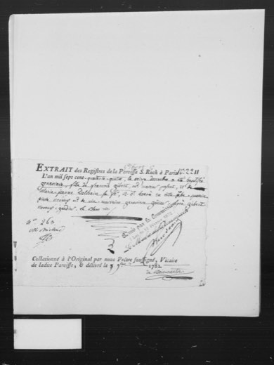


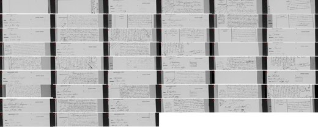


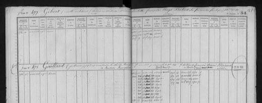

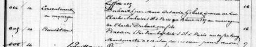


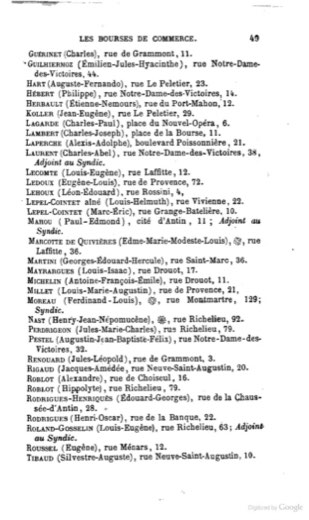


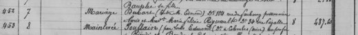


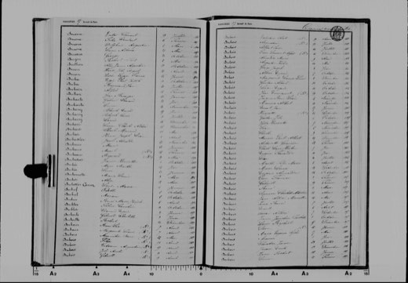

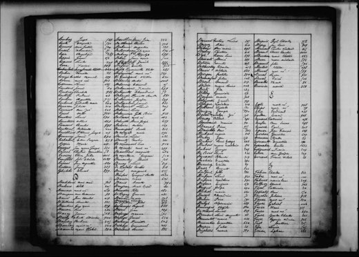


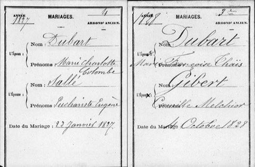


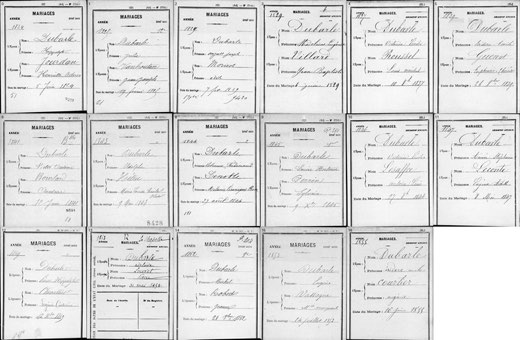


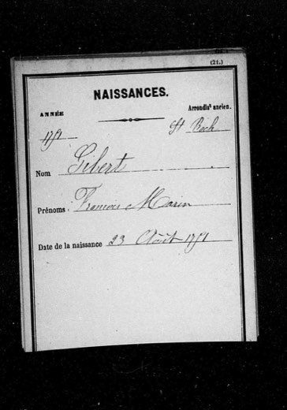

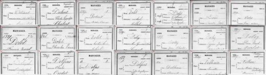


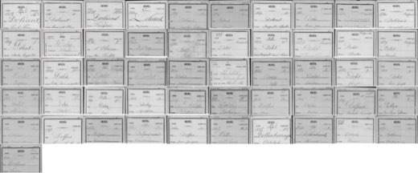


Adresses
- 30 faubourg PoissonnièreMarie Françoise Thais DUBART vérifié
- 104 faubourg PoissonnièreLouis Charles Ambroise DUBART non résolu
- paroisse Saint-Roch, rue Saint-HonoréGeneviève GIBERT 16 décembre 1744 vérifié ; Geneviève GIBERT 16 décembre 1744 vérifié ; Marin François GIBERT 24 août 1751 vérifié
- rue Saint-HonoréFrançois GIBERT 24 août 1751 vérifié
- Saint-Roch)Charles César GIBERT 12 octobre 1787 vérifié
- rue Plâtrière, Saint-Eustache)Jean Baptiste GIBERT 12 octobre 1787 vérifié
- Saint-Barthélemy)Louis Armand GIBERT 12 octobre 1787 vérifié
- rue Neuve des Petits-ChampsA0598 1789 partiellement vérifié
- 3e arr. ancien, rue du Faubourg-Poissonnière 31Camille Melchior GIBERT 18 août 1797 vérifié
- 31 boulevard Bonne-NouvelleMarie Catherine FOUCAMPREZ 14 septembre 1827 vérifié ; Camille Melchior GIBERT 14 septembre 1827 vérifié
- quai d'OrsayA0590 1827-1829 partiellement vérifié ; A0591 1828 vérifié
- rue Vivienne 16Louis Charles Ambroise DUBART 1828 non résolu ; Louis Charles Ambroise DUBART 4 octobre 1828 vérifié
- rue Neuve-d'Artois 31David BANDERALI 1829 vérifié
- rue Vivienne 9Louis Charles Ambroise DUBART, Euchariste Eugène SALLE 7 juin 1836 vérifié ; (Madame, prénom inconnu) DUBART 1837 vérifié ; (Madame, prénom inconnu) DUBART 1837 non vérifié ; Louis Charles Ambroise DUBART 13 mars 1843 non vérifié ; Louis Charles Ambroise DUBART, Euchariste Eugène SALLE 30 septembre 1843 vérifié ; Louis Charles Ambroise DUBART 30 septembre 1843 vérifié
- nouvelle rue Vivienne (salon)(Madame, prénom inconnu) DUBART 24 mars 1839 vérifié
- salle Herz(Madame, prénom inconnu) DUBART 14 février 1841 vérifié
- 1 rue ChabannaisA0553 1842 à 1855 non vérifié
- rue de Vendôme 9(pharmacien, prénom inconnu) DUBART 1851 non vérifié
- 17 rue de MénilmontantAdèle Félicie BOSSE 11 février 1853 vérifié
- rue des Petites-Écuries 3Alexandre RIGNAULT 24 janvier 1858 partiellement vérifié
- étude CXI (1 rue de Provence)Marie Octavie GIBERT 14 juillet 1860 vérifié
- rue Bleue 35Louis Charles Ambroise DUBART 26 juillet 1860 vérifié ; Marie Octavie GIBERT 9 août 1860 vérifié ; Marie Octavie GIBERT 9 août 1860 vérifié
- cimetière de MontmartreMarie Octavie GIBERT 11 août 1860 vérifié ; Louis Charles Ambroise DUBART, Marie Octavie GIBERT 6 décembre 1871 vérifié ; Edmond DUBART 13 mai 1903 vérifié ; Marie Félicie RIGNAULT 21 février 1918 vérifié
- rue Vivienne 9 et rue Colbert 1Euchariste Eugène SALLE 1862 partiellement vérifié
- 104 rue du Faubourg-PoissonnièreCamille Melchior GIBERT 30 juillet 1866 vérifié
- rue Beudant 19Marie Josephine GINDRE 9 octobre 1871 vérifié ; A0317 10 octobre 1871 vérifié ; Edmond DUBART 10 octobre 1871 non vérifié
- cimetière du Père-LachaiseLouis Charles Ambroise DUBART 15 octobre 1871 vérifié
- 82 rue BlancheMarie Charlotte Colombe DUBART 20 mai 1883 vérifié ; Marie Charlotte Colombe DUBART 20 mai 1883 vérifié
- 47 rue d'HautevilleFrançois Emile RIGNAULT 15 mars 1895 vérifié ; A0749 15 mars 1895 vérifié
- 3 rue TaitboutLéon DUBART 27 avril 1897 partiellement vérifié
- 28 boulevard Bonne-NouvelleJeanne Augustine BARON MARCHAL 4 mai 1922 vérifié
- église Saint-Eugène ; cimetière de MontmartreJeanne Augustine BARON MARCHAL 6 mai 1922 partiellement vérifié
Ce qui s'y est passé
473 informations- Un édit de 1712 place la Savonnerie sous le contrôle du contrôleur des Bâtiments du Roi à Paris ; les directeurs deviennent entrepreneurs ; Soufflot en a la tutelle en 1756 partiellement vérifié
- Aucune fiche de baptême reconstitué pour Paul César, Charles Lazare ni Jean Baptiste Gibert n'existe dans le fichier V3E/N 1004 entre 1714 et 1773 recherche infructueuse
- Aucun mariage entre François Gibert et Marie Jeanne Dolhain n'apparaît dans le fichier des mariages reconstitués : les deux seules fiches Dolhain de la liasse V3E/M 317 sont des années 1830-1840 (Étiennette Dolhain en 1834, une autre de 184[?]) recherche infructueuse
- Geneviève Gibert est baptisée à Saint-Roch (Paris) le 16 décembre 1744, fille de François Gibert, marchand mercier (« md mercier »), et de Marie-Jeanne Dolhain, sa femme, de la rue Saint-Honoré vérifié
- François Gibert, marchand mercier (« md mercier »), et Marie-Jeanne Dolhain, sa femme, ont déclaré être les parents de Geneviève Gibert en 1744 ; le père était présent et a signé vérifié
- Au baptême de Geneviève Gibert (1744), le parrain est Pierre Neveux, marchand de vin, et la marraine Geneviève Godier [?] vérifié
- Geneviève Gibert (baptisée en 1744) est vraisemblablement la sœur aînée de François Marin Gibert (baptisé en 1751) : mêmes parents nommés (François Gibert, maître mercier, et Marie-Jeanne Dolhain, rue Saint-Honoré, paroisse Saint-Roch) partiellement vérifié
- L'extrait de baptême de Geneviève Gibert (1744) a été déposé à la reconstitution par la « Cie Lafarge » : c'est la troisième pièce de la famille Gibert-Foucamprez portant ce dépôt, avec les baptêmes de François Marin (1751) et de Marie Catherine Foucamprez (1771) vérifié
- Quatre mariages d'un François Gibert avec d'autres épouses que Marie Jeanne Dolhain (× Meunier 1747, × Jouanet 1756, × Laurent 1766, × Incelin 1755) sont cités dans le relevé 6182 : ils ne concernent pas François Gibert × Marie Jeanne Dolhain recherche infructueuse
- Le fichier de l'état civil reconstitué contient une fiche de naissance « Bosse, Barthelemy Hippolyte », 22 mars 1749, paroisse Saint-Gervais [?]. non vérifié
- À Paris vers 1750, les marchands merciers formaient le troisième des Six Corps de marchands (drapiers, épiciers, merciers, pelletiers, bonnetiers, orfèvres) vérifié
- L'accès à la maîtrise de mercier impliquait, selon Wikipédia, trois ans d'apprentissage puis trois ans de compagnonnage célibataire, des droits d'entrée, avec exception pour les fournisseurs de la cour ; Proantic parle de trois ans d'apprentissage ; les deux sources ne s'accordent pas et sont tertiaires non vérifié
- Le nom Gibert n'apparaît pas dans la section « Maison de Madame la Dauphine » de l'Almanach royal 1751 (texte OCR) recherche infructueuse
- La maison de Madame la Dauphine telle que l'Almanach royal 1751 la donne comprend dame d'honneur (duchesse de Brancas), dames, chapelle, chevalier d'honneur (maréchal de la Fare), premier maître d'hôtel (marquis du Muy), surintendant, intendant, trésorier général et maître de la garde-robe ; aucun marchand ni office subalterne n'y figure vérifié
- Havard et Vachon (1889) écrivent qu'un nommé Gibert, valet de chambre et tapissier de madame la Dauphine, obtint la fonction d'inspecteur de la Savonnerie après la mort de Barbier en 1751 partiellement vérifié
- Le Gibert de Havard (A0628) est François Gibert, maître mercier et officier de Madame la Dauphine en 1751 non vérifié
- Naissance (Paris, Saint Roch) — selon l'arbre transmis non vérifié
- François Marin Gibert, né le 23 août 1751, est baptisé le 24 août 1751 à Saint-Roch (Paris) vérifié
- François Marin Gibert est fils de François Gibert et de Marie Jeanne Dolhain, son épouse, de la paroisse Saint-Roch, rue Saint-Honoré vérifié
- En 1751, François Gibert, père de François Marin, est maître mercier et officier de Madame la Dauphine vérifié
- Au baptême de François Marin Gibert (1751), le parrain est Marin de La Motte, bourgeois de Paris, rue des Deux-Écus (paroisse Saint-Eustache), et la marraine Marie Magdeleine Françoise Collot, fille, demeurant rue Neuve-de-Luxembourg (paroisse Saint-Roch) vérifié
- Un Gibert est inspecteur de la Savonnerie à des dates documentées en 1751 (Havard), 1757 et 1777 (Soufflot) ; François Gibert est dit inspecteur de la manufacture des tapis de la Couronne dite de la Savonnerie, vivant, le 12/10/1787 (A0665), et qualifié de même à titre posthume en 1790 (« ancien » non retrouvé à la relecture) non vérifié
- La Savonnerie compte vers 1751 vingt ouvriers, neuf apprentis, l'entrepreneur, l'inspecteur, un chapelain, un concierge et un portier ; vers la fin de 1790, vingt ouvriers et six apprentis, avec l'entrepreneur Nicolas-Cyprien Duvivier partiellement vérifié
- Aucun mariage Gibert × Marie Marguerite R… ni Paul César, Charles Lazare, Jean Baptiste, Geneviève, n'est dans V3E/M 431 avant 1795 recherche infructueuse
- Un inventaire « Gibert Guillaume + » (1756, étude LXVI) et un Guillaume Toussaint Gibert (× Fontenilliat, cité en 1807 à l'étude CVIII) sont des homonymes possibles du notaire Guillaume Gibert (étude CVIII, 1796) ; aucun lien établi avec la famille de François Gibert non résolu
- Le 18 juin 1757 environ, Soufflot écrit à Marigny qu'il s'est informé auprès de M. Gibert pour la fourniture de banquettes et de portières de la Savonnerie destinées à Saint-Hubert ; l'éditeur annote « Gibert, premier inspecteur de la manufacture de la Savonnerie » vérifié
- Le Garde-Meuble de la Couronne s'installe en 1758 à l'hôtel de Conti, puis à l'hôtel des Ambassadeurs extraordinaires, et en 1772 dans le bâtiment de la place Louis XV ; intendants : Fontanieu (1767-1784), Thierry de Ville-d'Avray (1784-1792) partiellement vérifié
- Aucune fiche de décès reconstitué pour un François Gibert mort entre 1760 et 1790 n'est dans V3E/D 639 (tranche jusqu'à 1814) recherche infructueuse
- Le « M. Gibert » des volumes 1777-1779 (cour de l'Orangerie) est le compositeur de la musique des Trois Sultanes ; la notice BnF donne un compositeur Paul-César Gibert (1717-1787) de Soliman II ou les Trois Sultanes (1761) non vérifié
- Un mariage Legrand Jean Pierre × Gibert Geneviève est cité dans le répertoire du notaire Garcerand le 16/04/1765 (cote RE/XC/7) : homonyme possible de Geneviève Gibert baptisée à Saint-Roch en 1744 non résolu
- Marie Catherine Foucamprez, née le 3 mars 1771, est baptisée le même jour à Saint-Sulpice (Paris) vérifié
- Marie Catherine Foucamprez est fille d'Adrien Foucamprez et de Catherine Colin, son épouse vérifié
- Au baptême de Marie Catherine Foucamprez (1771), le parrain est François Étienne Alexis Foucamprez, la marraine Marie Madeleine Dettous [?], épouse du parrain ; le père est présent vérifié
- Naissance (Paris) — selon l'arbre transmis non vérifié
- Le mariage de Louis Charles Ambroise Dubart et de Marie Octavie Gibert n'est pas dans le fichier des mariages reconstitués de Paris, ni au nom Gibert (fiches 1772-février 1841), ni au nom Dubart (liasse entière) recherche infructueuse
- L'Almanach musical de 1776 nomme « Paul-César Gibert » comme auteur du Mélange musical (partitions, « chez l'Auteur ») et « P. C. Gibert » comme auteur de la musique de la Traduction de Catulle vérifié
- Un Jean Baptiste Gibert marié à Marie Geneviève Raison (contrat ou mariage du 22/05/1776, étude XCI) et un inventaire « Gibert Jean Baptiste » du 10/01/1785 (étude XCI) sont cités dans le relevé 6182 : homonymes possibles du caissier Jean Baptiste Gibert (vivant en 1787 et en 1790) non résolu
- Les volumes de l'Almanach musical de 1777, 1778 et 1779 listent un « Gibert, cour de l'Orangerie » dans les mêmes catégories (auteurs, chant, clavecin pour l'accompagnement, composition) ; celui de 1781 et celui de 1782 n'en contiennent pas dans l'OCR vérifié
- Le visiteur général des postes de 1778 ne comprend pas de Gibert (Dupleſſis, Le Brun, Jacquesson de la Forest) recherche infructueuse
- Aucun Gibert aux Postes dans les Almanachs royaux de 1780 et de 1781 (Visiteurs généraux : Duplessis, Le Brun, Jacquesson de la Forest ; Caissier des Envois d'argent en 1780 : Delorme des Petits-francs) : l'entrée des Gibert dans ces fonctions se situe donc entre 1781 et 1783 partiellement vérifié
- Les merciers avaient le droit d'« enjoliver » les marchandises qu'ils vendaient mais non de les fabriquer (Encyclopédie méthodique, 1783) non vérifié
- L'Almanach musical de 1783 liste un « Gibert, à la Manufacture royale de la Savonnerie, près Chaillot » dans quatre rubriques : auteurs ou compositeurs, maîtres de chant, maîtres de clavecin, maîtres d'accompagnement et de composition vérifié
- Le musicien « Gibert » de la Savonnerie en 1783 est le « professeur de musique » et inspecteur de la Savonnerie de l'avis de 1790 (Paul César) non vérifié
- Dans l'Almanach royal de 1783, un « M. Gibert, au Luxembourg » est l'un des Visiteurs généraux des Postes vérifié
- Dans l'Almanach royal de 1783, un « M. Gibert, à l'hôtel des Postes, rue Plâtrière » est le Caissier des Envois d'argent vérifié
- Le Visiteur général Gibert des almanachs 1783-1789 est Charles César (lu d'abord « Lazare ») ; le Caissier des Envois d'argent Gibert est Jean Baptiste (titres et adresses donnés à ces deux frères dans l'avis du 12/10/1787 : visiteur général des postes et relais de France, rue Neuve-des-Petits-Champs ; caissier des remises et envois d'argent pour la province, hôtel des Postes rue Plâtrière) partiellement vérifié
- En 1784 les deux fonctions (Visiteur général ; Caissier des Envois d'argent) portent la même adresse « M. Gibert, rue neuve des Capucines » vérifié
- Paul César Gibert est mort au plus tard le 12 octobre 1787 : l'avis de parents de ce jour le dit « défunt », sa femme « à présent veuve » et enceinte d'un enfant posthume ; l'avis de 1790 rappelle la nomination de la veuve comme tutrice par un avis du « 19 8bre 87 » (19 octobre 1787, relu) vérifié
- Le 12 octobre 1787, devant deux notaires du Roi à Paris, les parents et amis de Christine Geneviève Gibert (10 ans), de Benoist Charles César Gibert (8 ans) et de l'enfant posthume dont leur mère est enceinte émettent un avis de parents (tutelle) : la veuve de Paul César Gibert tutrice, Charles César Gibert subrogé tuteur et curateur au ventre ; l'avis est présenté pour homologation au lieutenant civil du Châtelet (l'index le date du 19/10/1787) vérifié
- Le 12/10/1787, Christine Geneviève Gibert est « âgée de dix ans » et Benoist Charles César Gibert « âgé de huit ans » vérifié
- Au 12/10/1787, Marie Marguerite Dubois, veuve de Paul César Gibert, est enceinte d'un enfant posthume ; elle demeure à Monceaux près Paris (paroisse de Clichy), est désignée tutrice des deux mineurs et, après son accouchement, de l'enfant à naître ; elle signe « M. M. Dubois » vérifié
- Le 12 octobre 1787, François Gibert, « valet de chambre du Roy [et ?] de Madame sœur du Roy » et « inspecteur de la manufacture royale des tapis de la Couronne dite de la Savonnerie, établie à Chaillot », y demeurant, est présent à l'avis de parents comme « ayeul paternel » des mineurs vérifié
- François Gibert, « ayeul paternel » des mineurs en 1787, est le père de Paul César Gibert, inspecteur de la Savonnerie « en survivance du sieur son père » partiellement vérifié
- En 1787, Paul César Gibert est « professeur de musique, officier de la chambre de Madame, sœur du Roy » et « inspecteur de la manufacture royale de la Savonnerie, en survivance du sieur son père » vérifié
- Charles César Gibert (et non « Lazare ») est, en 1787, « visiteur général des Postes et relais de France », demeurant à Paris rue Neuve-des-Petits-Champs (paroisse Saint-Roch), « oncle paternel » des mineurs, élu subrogé tuteur de ses neveux et curateur au ventre vérifié
- En 1787, Jean Baptiste Gibert est « caissier des remises et envois d'argent pour la province », demeurant à l'hôtel des Postes, rue Plâtrière (paroisse Saint-Eustache), « oncle paternel » des mineurs vérifié
- En 1787, Louis Armand Gibert est « marchand orfèvre à Paris », demeurant quai des Orfèvres (paroisse Saint-Barthélemy), « oncle à la mode de Bretagne » des mineurs vérifié
- Benoît Bron (« directeur général du Département des Postes [?] », hôtel des Postes, rue Plâtrière), Charles Mitoire (visiteur des Postes, rue Plâtrière, Saint-Eustache) et Estienne Féguin (maître apothicaire, rue Saint-Honoré, Saint-Roch) comparaissent comme « amis » des mineurs et signent l'avis du 12/10/1787 vérifié
- Ni Marie Jeanne Dolhain ni François Marin Gibert ne sont nommés ni représentés dans l'avis de parents du 12/10/1787 recherche infructueuse
- François Gibert est mort entre le 12/10/1787 (présent et comparant à l'avis de parents) et le 22/06/1790 (dit défunt, Marie Jeanne Dolhain étant sa veuve) partiellement vérifié
- Un inventaire de « Paul Cesar GIBERT + » est cité dans le répertoire du notaire Guillaume Henri Picquais (étude LVI) à la date du 23/10/1787 (cote RE/LVI/14) partiellement vérifié
- L'inventaire du 23/10/1787 (étude Picquais) est l'inventaire après décès du Paul César Gibert de l'avis du 12/10/1787 ; Paul César est donc mort peu avant le 12/10/1787 partiellement vérifié
- En 1788 et 1789, un « M. Gibert, rue Neuve des Petits-Champs » est Visiteur général et un « M. Gibert, hôtel des Postes » est Caissier des Envois d'argent vérifié
- L'Almanach royal de 1789 donne, parmi les « Visiteurs Généraux » de l'Administration générale des Postes aux lettres, « M. Gibert, rue Neuve des Petits-Champs » (sans prénom) ; le caissier y est « M. Sompion [?] » partiellement vérifié
- Le « M. Gibert, rue Neuve des Petits-Champs » visiteur général des postes de l'Almanach royal 1789 est probablement Charles César Gibert (lu d'abord « Lazare »), « visiteur général des postes et relais de France » en 1787 et 1790 partiellement vérifié
- Aucun personnel de la Savonnerie (inspecteur) n'est lisible dans l'Almanach royal 1789 (OCR) ; seul le directeur Pierre est cité recherche infructueuse
- L'Almanach royal de 1789 liste au Garde-Meuble « M. Capin, Tapissier du Roi » ; aucun Gibert valet de chambre tapissier dans les Almanachs royaux de 1769, 1780, 1789 recherche infructueuse
- Un décès « Gibert Marie Marguerite », 8 août 1789, ancienne paroisse Sainte-Marguerite, est indexé à V3E/D 639 (img 20) ; identité avec la veuve de Paul César Gibert non vérifiée et peu probable non vérifié
- Aucun « Jean Baptiste Gibert » ni aucun caissier Gibert des postes n'a été retrouvé dans le texte OCR des Almanachs royaux de 1789 (deux numérisations) et de 1792 contredit
- Le père des mineurs de l'avis du 22/06/1790 est lu « Paul César Gibert » (relecture F16 bis) : il porte le même nom que le compositeur Paul-César Gibert de l'Almanach musical de 1776 et de la notice BnF (1717-1787) ; l'identité est une inférence (même nom, métier musical, décès avant 1788) non vérifié
- Hypothèse (b) : les mineurs Gibert de 1790 seraient les enfants de François Marin Gibert et d'une première épouse décédée avant 1790 (François Marin ne se remarie qu'en 1793) réfuté
- Le 22 juin 1790, devant Antoine Omer Talon [?], lieutenant civil au Châtelet de Paris, sont comparus les parents et amis de deux enfants mineurs Gibert, Benoît Charles César et Christine Geneviève (avis de parents, AN Y5191B) : leur aïeule paternelle Marie Jeanne Dolhain, leurs oncles Charles César (lu d'abord « Lazare ») et Jean Baptiste Gibert, Guillaume Jacques Lenoir de Beauregard (bachelier en droit), Louis Antoine Calmarde de Castelmoule (avocat au Parlement), François César Gougeot [?] et d'autres, tous comparants par fondé de procuration ; la mère, veuve et tutrice, y est partie vérifié
- Les deux enfants mineurs Gibert de l'avis de 1790, Benoît Charles César et Christine Geneviève (lus d'abord « Benoit [?] Charles César » et « Célestin [?] Germain [?] »), sont les enfants de feu Paul César Gibert et de Marie Marguerite Dubois (lue d'abord « R… [?] »), sa veuve vérifié
- Paul César Gibert est désigné, dans l'avis du 22/06/1790, comme « professeur de musique, officier de la chambre de Madame et inspecteur de la manufacture royale de la Savonnerie » vérifié
- Paul César Gibert est défunt au 22 juin 1790 (« feu » ; ses enfants sont mineurs de lui et leur mère est sa veuve) vérifié
- Marie Marguerite Dubois (lue d'abord « Rabis »), épouse de Paul César Gibert, est sa veuve en 1790 et la tutrice de leurs enfants mineurs, nommée par l'avis de parents de 1787 (12/10/1787, présenté le 19/10/1787) vérifié
- François Gibert, époux de Marie Jeanne Dolhain, est défunt au 22 juin 1790 (Marie Jeanne Dolhain y est dite sa veuve) vérifié
- En 1790, François Gibert, dit défunt, est qualifié de « valet de chambre tapissier du Roi » et d'inspecteur de la manufacture royale de la Savonnerie (qualités qu'il portait de son vivant en 1787, voir A0665) partiellement vérifié
- Marie Jeanne Dolhain est dite en 1790 « veuve de François Gibert » et aïeule paternelle des mineurs Gibert vérifié
- Charles César Gibert (lu d'abord « Lazare ») est, en 1790, « valet de chambre [?] du Roi et visiteur général des postes et relais de France » et « oncle » des mineurs Gibert (« oncle paternel » selon l'index, et selon l'avis de 1787 : A0669) vérifié
- Jean Baptiste Gibert est « caissier des postes » et « oncle paternel » des mineurs Gibert (avis du 22/06/1790) vérifié
- L'avis du 22/06/1790 a pour objet le partage (ou la licitation) de la succession de François Gibert et de sa communauté avec Marie Jeanne Dolhain, dont les mineurs sont héritiers à la place de leur père ; la veuve tutrice y est autorisée à procéder partiellement vérifié
- François Marin Gibert (P8800) n'apparaît pas dans la liste des comparants lue (lignes 14-25) de l'avis du 22/06/1790 recherche infructueuse
- Marie Jeanne Dolhain est morte entre le 22 juin 1790 et le 24 novembre 1796, et l'inventaire de 1796 est son inventaire après décès non vérifié
- Chaque action de la Caisse Lafarge (90 livres) reposait sur une « tête » (l'assuré) dont la vie conditionnait la rente ; à la mort de la tête le capital revenait à la tontine ; la rente exigeait un certificat de vie annuel ; classes « Jeunes » (moins de 45 ans à la souscription) et « Vieillards » (plus de 45 ans) vérifié
- La provenance Caisse Lafarge des extraits de baptême de François Marin Gibert (1751) et de Marie Catherine Foucamprez (1771) et du décès de celle-ci (1827) rend cohérente l'hypothèse A0566 (ils auraient été « têtes » de la Caisse) ; elle ne la prouve pas non vérifié
- S'ils avaient été têtes à la souscription (1791-1793), François Marin (né en 1751) et Marie Catherine (née en 1771) relèveraient de la classe « Jeunes » et Geneviève (baptisée en 1744) de la classe « Vieillards » non vérifié
- La Caisse Lafarge, tontine fondée le 21 mars 1791 par J. Lafarge et L.-C. Mitouflet, a été confiée à l'Administration municipale de Paris par décret du 1er avril 1809 et s'est éteinte à la mort de la dernière tête, le 14 septembre 1888 vérifié
- La sous-série D6J des Archives de Paris, dont relève la table des mariages de Notre-Dame-de-Bonne-Nouvelle 1803-1820 (D6J 1209), est celle des registres de catholicité (doubles) déposés par l'archevêché de Paris (1791-1909) : ce sont des registres paroissiaux, non de l'état civil partiellement vérifié
- Dans le fichier des mariages reconstitués (liasse Dubart entière), aucun homme Dubart ne se marie à Paris avant le 9 avril 1840 ; les mariages d'hommes Dubart sont : Arnould Joseph × Sophie Delestrain (9/04/1840, 1er anc.), Vincent Alfred × Adrienne Charlotte Sophie Chauvet (17/01/1844, 10e anc.), J[osep]h Éléonore × Jeanne N[icol]e [?] Gérard (22/12/1844, 2e anc.), Narcisse Armand × Virginie Marie Dreux (26/04/1859) partiellement vérifié
- Rapport de Restout (décembre 1792) : dépenses annuelles de la Savonnerie : ouvriers 22 916 livres, matières 8 770 livres, chapelain 1 300 livres, inspecteur 1 000 livres, portier 400 livres plus 200 d'habillement ; douze anciens ouvriers touchent 40 livres de logement ; directeur : environ 3 000 livres partiellement vérifié
- L'Almanach royal de 1792 imprime pour la Poste de Paris seulement les administrateurs du Directoire ; l'Almanach national de l'an III donne une Agence des Postes de six agents nationaux ; ni l'un ni l'autre ne liste d'employés : absence sans valeur contre Gibert partiellement vérifié
- Un mariage Danini × Gibert Genevieve Christine est cité dans le répertoire du notaire Billard le 05/09/1793 (cote RE/LXXIV/3) partiellement vérifié
- Marin François Gibert et Marie Catherine Foucamprez se sont mariés le 18 frimaire an II (8 décembre 1793) « à la ci-devant municipalité de Paris » partiellement vérifié
- Le mariage de François Marin Gibert et de Marie Catherine Foucamprez (18 frimaire an II) n'est pas dans le fichier des mariages reconstitués : aucune fiche Foucamprez (liasse V3E/M 388) ni aucune fiche Gibert de 1793 (liasse V3E/M 431) recherche infructueuse
- Aucun acte de mariage Gibert × Foucamprez n'a été trouvé parmi les actes reconstitués du 18 frimaire an II (8/12/1793) : liasse 5Mi1 2008 (mariages du 02 au 09/12/1793) et liasse des mariages déclassés 5Mi1 2339 ne contiennent ni Gibert ni Foucamprez recherche infructueuse
- Un inventaire est dressé le 24 novembre 1796 (4 frimaire an V) par le notaire Guillaume Gibert (étude CVIII), au nom de « Gibert » (prénom non relevé) et de son conjoint ou sa conjointe Marie Jeanne Dolhain (répertoire RE/CVIII/18) partiellement vérifié
- Camille Melchior Gibert, né à Paris (3e) le 1er fructidor an V (18/08/1797), est fils de François Marin Gibert, pensionnaire de l'État, et de Marie Catherine Foucamprez, décédée à Paris (5e) le 14/09/1827 vérifié
- Camille Melchior Gibert est né à Paris le 18 août 1797 (et non le 18 septembre) partiellement vérifié
- Dans une brochure qu'il publie en juin 1833, le Dr C.-M. Gibert se présente lui-même comme « né à Paris le 18 août 1797 » vérifié
- Wikidata donne pour Camille-Melchior Gibert deux dates de naissance (18 septembre et 18 août 1797), né dans l'ancien 3e arrondissement de Paris, mort le 30 juillet 1866 non vérifié
- Camille Melchior Gibert naît le 1er fructidor an V (18 août 1797) à 5 h du matin, rue du Faubourg-Poissonnière n° 31, 3e arrondissement ancien de Paris (division Poissonnière) vérifié
- Camille Melchior est fils de François Marin Gibert, « employé à la Poste », et de Marie Catherine Foucamprez, son épouse vérifié
- Témoins de la naissance de 1797 : Jean Claude Paris, 62 ans, employé, domicilié rue des Vieux-Augustins n° 275 (division du Mail) ; Charlotte Aimée Lique [?], 33 ans, rentière, domiciliée dans la maison de l'accouchée vérifié
- Naissance : née à Paris selon son acte de décès — selon l'arbre transmis non vérifié
- Le fichier de l'état civil reconstitué contient une fiche de naissance « Rignault, Alexandre », 28 brumaire an XII [20/11/1803], 11e arrondissement ancien. non vérifié
- La Marie Anne Rosalie Lepinois mère de Jean Édouard Amélie (1804) est P7060, épouse de Rignault partiellement vérifié
- Jean Édouard Amélie est né à Paris le 27 messidor an XII (16 juillet 1804) à deux heures de l'après-midi, rue Saint-Benoît n° 9 (10e arr. ancien), fils de Marie Anne Rosalie Lepinois vérifié
- En juillet 1804, Marie Anne Rosalie Lepinois est couturière et dit née à Noyon le 4 novembre 1776 vérifié
- L'acte de naissance de 1804 ne nomme pas de père vérifié
- Aucun acte civil de mariage Gibert × Foucamprez / Foucamprer n'a été vu parmi les chemises lues de la liasse reconstituée 5Mi1 2014 (mariages du 07/11/1804 au 19/11/1804, 47 images) recherche infructueuse
- Le couple François Marin Gibert × Marie Catherine Foucamprer de la table de 1804 est le couple François Marin Gibert (P8800) × Marie Catherine Foucamprez (P8802) de la base non vérifié
- François Marin Gibert et Marie Catherine « Foucamprer » ont fait célébrer leur mariage religieux à la paroisse Notre-Dame-de-Bonne-Nouvelle le 17 novembre 1804 (inscription à la table des mariages paroissiaux) partiellement vérifié
- Alexandre Rignault et Marie Anne Rosalie Lepinoy se marient à Paris le 21/08/1807. partiellement vérifié
- La fiche de mariage du 21/08/1807 (Rignault × Lepinoy) porte l'arrondissement ancien 11e partiellement vérifié
- L'acte de mariage Rignault × Lepinoy du 21/08/1807 (11e arr. ancien) n'a pas été retrouvé dans le haut des pages de la fiche 5Mi1 2016 n° 736160 (05-22/08/1807) recherche infructueuse
- Marie Octavie Gibert est née entre le 10/08/1807 et le 04/02/1808 si le baptême du 4 février 1808 est le sien (A0690) partiellement vérifié
- Marie Octavie Gibert est née entre le 10/08/1807 et le 09/08/1808 (fourchette tirée de l'âge déclaré, 52 ans, au décès du 09/08/1860) non vérifié
- La rue du Sépulcre (paroisse Saint-Sulpice) est l'actuelle rue du Dragon (6e) ; le nom de « Sépulcre » vient des chanoines du Saint-Sépulcre (propriété au début du XVe siècle, manuscrit de 1636), et les habitants obtinrent le changement de nom en 1808 partiellement vérifié
- Naissance (Paris) — selon l'arbre transmis non vérifié
- La date de naissance de Jean Louis Alexandre Rignault reste discordante : 7 janvier 1808 (fiche de la table de reconstitution) contre 9 janvier 1808 (acte de décès de 1885, A0031). non résolu
- La table de reconstitution porte une naissance de Jean Louis Alexandre Rignault le 7 janvier 1808, Paris, 7e arrondissement ancien. partiellement vérifié
- Jean Louis Alexandre, violoniste, né le 9/1/1808, sociétaire de la Société des concerts du 10/12/1843, retraité le 12/10/1869 ; son frère Émile, violoncelliste, né 14/6/1812 à Paris, mort 15/3/1895 à Paris, sociétaire 6/12/1835 partiellement vérifié
- Baptême : St Merri (Paris) — selon l'arbre transmis non vérifié
- La table des baptêmes de Notre-Dame-de-Bonne-Nouvelle porte, au n° 63 de l'année 1808, « Gibert, Mᵉ octavie » (Marie Octavie), baptisée le 4 (février) 1808 vérifié
- Marie Octavie Gibert (P7411), fille de François Marin Gibert et de Marie Catherine Foucamprez, a probablement été baptisée à Notre-Dame-de-Bonne-Nouvelle le 4 février 1808 partiellement vérifié
- Aucune fiche « Rignault, Pierre Augustin » (26 mai 1809) n'a été trouvée dans le fichier des naissances V3E/N 1942, tranche « Rignault (1803) – Rignolet (1858) » (fiches 1803-1858 lues entre Jean Louis Alexandre 1808 et François Émile 1812). recherche infructueuse
- Alexis Gindre est décédé à Paris le 14 juillet 1810 d'après une fiche de la table de reconstitution, qui renvoie à un acte de mariage Gindre du 30 avril 1817. partiellement vérifié
- Hypothèse : l'Alexis Gindre mort à Paris en 1810 est le père de Marie Joséphine Gindre. non vérifié
- Louis-Alexandre Blin de Bourdon (Amiens 1782-Paris 1849), vicomte, est député de la Somme en 1815-1816, 1823-1831 et 1834-1849, préfet de l'Oise (1823-1824) puis du Pas-de-Calais (1824-1830), maire d'Amiens (1816-1817) non vérifié
- Aucun Gibert dans les listes d'encadrement de la Manufacture royale des tabacs en 1823 et 1829 recherche infructueuse
- En 1824, le vicomte Blin de Bourdon, député, a pour adresse parisienne 126 rue de Grenelle-Saint-Germain ; la même édition le donne préfet en résidence à Beauvais vérifié
- Carrière hospitalière et universitaire : interne de Biett à Saint-Louis 1818-1819, docteur 1822 (thèse « Quelques réflexions sur la médecine moderne »), agrégé 1824, hôpital de Lourcine 1836 non vérifié
- Mariage : ont peut-être eu un fils demeurant au 8 rue de ménilmontant en 1851 prénommé Felix Hippolyte (a priori FH Bossé de cette fiche était décédé à cette date) (Paris, 5ème) — selon l'arbre transmis non vérifié
- Le fichier de l'état civil reconstitué contient une fiche de naissance « Bosse, Adèle Félicie », 19 janvier 182[5], Paris. partiellement vérifié
- Mariage (Paris) — selon l'arbre transmis non vérifié
- Le dermatologue a été interne et externe des hôpitaux de Paris (Hôtel-Dieu et Saint-Louis) pendant sept ans, médecin du Bureau de charité du Ve arrondissement pendant huit ans, agrégé de la Faculté de Paris reçu premier au concours de 1827 partiellement vérifié
- Gibert enseigne les maladies de la peau par cours pratiques annuels depuis 1827 (douze ans en 1839) et écrit avoir observé plus de deux mille malades partiellement vérifié
- Marie Charlotte Colombe Dubart et Euchariste Eugène Sallé se marient à Paris (ancien 4e) le 23 janvier 1827 vérifié
- En janvier 1827, Euchariste Eugène Sallé est commis marchand de soieries, âgé de 26 ans, né le 10 ventôse an VIII (1/03/1800) à la Verrerie, commune de Vassai [?] (Orne), fils de feu Julien Sallé, propriétaire, et de Jeanne Dupont ; il demeure rue de Richelieu n° 55 [?], comme le témoin Jean-Baptiste Gay, marchand de soieries vérifié
- En janvier 1827, Colombe Dubart est couturière, âgée de 30 ans, et demeure rue d'Angivilliers n° 16 (4e) vérifié
- Selon le dossier ChatGPT, Marie Charlotte Colombe Dubart et Euchariste Eugène Sallé se marient le 27 janvier 1827 contredit
- Marie Catherine Foucamprez, épouse de François Marin Gibert (76 ans), meurt le 14 septembre 1827 à cinq heures du matin en la maison n° 31 boulevard Bonne-Nouvelle (Paris, ancien 5e, quartier Bonne-Nouvelle), âgée de 56 ans, née à Paris vérifié
- Le décès de Marie Catherine Foucamprez (1827) est déclaré par son fils Camille Melchior Gibert, 30 ans, médecin, demeurant 31 boulevard Bonne-Nouvelle, et par Joseph Pierre Bernard Chauvet, 38 ans, négociant, demeurant rue Poissonnière n° 21 vérifié
- En septembre 1827, le médecin Camille Melchior Gibert demeure 31 boulevard Bonne-Nouvelle, dans la maison où meurt sa mère vérifié
- Octavie avait 19 ou 20 ans à la mort de sa mère (14/09/1827) et 21 ou 22 ans à celle de son père (05/10/1829), soit environ trois mois et demi après la naissance de son fils Charles (24/06/1829) non vérifié
- La Manufacture royale des Tabacs du Gros-Caillou (quai d'Orsay) est construite en 1827 sur l'île des Cygnes, ouverte en 1829 d'après Wikipédia ; Du Camp écrit qu'« on ajouta en 1827 les bâtimens d'habitation qui lui servent de façade » partiellement vérifié
- En 1828, un « Rignault aîné » est chef des deuxièmes violons et timballier au Théâtre de Madame, 105 Vieille-rue-du-Temple partiellement vérifié
- En 1828, « Rignault (Alexandre) » est 2e violon à la Gaîté, 105 Vieille-rue-du-Temple partiellement vérifié
- Louis Dubart est en 1828 commis de la maison de soieries établie au 16 rue Vivienne (Richer et Cie, ancienne maison Nourtier, enseigne « Au Page ») non résolu
- Si Mme Dubart a été l'élève de Banderali à Paris, cet enseignement date au plus tôt de 1828 non vérifié
- « Rignault aîné » est parmi les jeunes organisateurs des Concerts d'émulation de l'École royale de musique en 1828 ; « Rignault frères » y débutent non vérifié
- L'Almanach royal et national de 1828 donne des agents de la Manufacture royale des Tabacs avec adresses : Desmarest, régisseur, « à la manuf. royale, quai d'Orsay, au Gros-Caillou » ; Dupleix, contrôleur, premier commis, « à la Manufacture » ; Breban, quai d'Orsay n° 29 vérifié
- L'Almanach du commerce de 1828 inscrit une « Dubart (Mme), r. de Grenelle-St.-Germain, 40 » et, à la même adresse, « Dubart, lingerie » (encore en 1829) : une autre femme Dubart, lingère, vit à Paris à la fin des années 1820 non vérifié
- Aucun Dubart ni Sallé de la famille dans l'index des neuf volumes de listes électorales parisiennes (VD6) mis en ligne sur Geneanet (1828, 1830-1831, 1846-1847, 1857-1863), ni dans le Didot-Bottin de 1862 recherche infructueuse
- Camille Melchior Gibert et Marie Françoise Thaïs Dubart se marient à Paris (ancien 3e) le 4 octobre 1828 ; lui, médecin, rue de Cléry 41 ; elle, rentière, née au Quesnel le 3 ventôse an VI (21/02/1798) vérifié
- Le 4 octobre 1828, Louis Charles Ambroise Dubart, 24 ans, commis marchand, demeurant rue Vivienne n° 16, est témoin au mariage de sa sœur Thaïs (« ami des époux ») vérifié
- En octobre 1828, Eugène Euchariste Sallé, 28 ans, est commis marchand, demeurant rue d'Angivilliers n° 16, et témoin au mariage de Thaïs Dubart vérifié
- Louis Pierre Germain Obry, rentier (61 ans en 1827, rue du Roule 14 ; 63 ans en 1828, rue des Fossés-Saint-Germain-l'Auxerrois 6), est témoin aux deux mariages, « ami des époux » ; ses adresses sont exactement celles de « Mme Obry-Dubart, couturière » dans le Bottin (1827 ; 1832-1835) : sa femme est donc née Dubart, parenté avec la fratrie inconnue partiellement vérifié
- Marie Françoise Thaïs Dubart, née au Quesnel le 3 ventôse an VI (21/02/1798), est fille de Jean Alexandre Dubart, propriétaire, décédé au Quesnel le 30/10/1821, et de Joséphine Salart, décédée au même lieu le 10/11/1812 vérifié
- En 1828-1830, un « Rignault jeune » est violoncelliste au Théâtre de Madame partiellement vérifié
- L'Almanach royal 1829 liste « M. Gibert, Chef » du bureau « Portefeuille des valeurs diverses » de la Caisse centrale du Trésor royal vérifié
- L'Almanach royal pour 1829 range Bandérali parmi les professeurs des classes de chant du Conservatoire (École royale de musique et de déclamation lyrique), rue Neuve-d'Artois n° 31 vérifié
- Le contrat de mariage de Louis Dubart et d'Octavie Gibert n'apparaît pas dans l'index nominatif (entrées 1-1199, avril 1829-juillet 1830) du registre des contrats de mariage de commerçants (MC/CM/1) recherche infructueuse
- Charles Dubart naît à Paris (ancien 5e) le 24 juin 1829, fils de Louis Charles Ambroise Dubart et de Marie Octavie Gibert, son épouse ; l'acte rétabli en 1872 ne dit rien d'autre partiellement vérifié
- François Marin Gibert, veuf, 78 ans, meurt le 5 octobre 1829 à la Manufacture des tabacs (6e bureau de l'Enregistrement, anciens 9e-10e) ; aucune succession n'est déclarée (« avis 9 mai 1830, rapporté ») vérifié
- L'acte de décès de François Marin Gibert (5/10/1829) n'a pas été retrouvé dans l'état civil reconstitué : aucune fiche Gibert de 1829 de l'ancien 10e arrondissement ni de prénoms François Marin dans le fichier des décès V3E/D 639 (deux fiches 1829, ancien 8e), aucun Gibert parmi les chemises lues des actes 5Mi1 1229 des 4 au 7 octobre 1829 recherche infructueuse
- Le « M. Gibert » du Trésor (1829, 1831) n'est pas identifiable à Marin François Gibert non résolu
- En 1830, un « Rignault père » est altiste au Théâtre de Madame partiellement vérifié
- L'Almanach royal 1831 liste « M. Gibert, Chef » au même bureau vérifié
- En 1833 Gibert déclare avoir assuré des services temporaires à l'hôpital Saint-Louis, notamment pendant l'épidémie de choléra de 1832, et fait des leçons cliniques à Saint-Louis pendant les vacances de 1832 partiellement vérifié
- Gibert est l'un des quatre rédacteurs-propriétaires de la Revue médicale (avec Bayle, Cayol, Martinet) en 1833 partiellement vérifié
- Le dermatologue est domicilié rue du Sentier 18 en 1834 (Guyot, d'après FactGrid) non vérifié
- Le domicile de 1836 (« Passy […] à côté d'un Neuilly ») est plus probablement Passy (Seine) que Passy (Yonne). non vérifié
- Aucune source lue n'apprend ce qu'étaient en 1836 le n° 4 de la rue de l'Échelle ni la planche de l'Atlas Vasserot qui le montre : la rue n'est pas indexée dans le moteur des plans parcellaires recherche infructueuse
- Edmond Dubart, né le 17 mai 1836, est baptisé le 2 juin 1836 à Saint-Germain-l'Auxerrois ; ses parents Louis Charles Ambroise Dubart et Marie Octavie Gibert demeurent 4 rue de l'Échelle ; parrain : son oncle Camille Melchior Gibert (rue du Sentier 18) ; marraine : sa tante Marie Charlotte Françoise Thaïs Dubart, épouse du parrain vérifié
- Baptême : paroisse de Saint Germain l'Auxerrois (Paris) — selon l'arbre transmis non vérifié
- Louis Charles Ambroise Dubart et Eugène Euchariste Sallé forment par acte sous seing privé du 7 juin 1836 une société en nom collectif « E. Sallé et Dubart » pour une maison de commerce de soieries, châles et nouveautés, siège 9 rue Vivienne à Paris, pour 18 ans du 1er janvier 1837 au 1er janvier 1855 vérifié
- En juin 1836, Louis Charles Ambroise Dubart demeure 4 rue de l'Échelle à Paris vérifié
- En juin 1836, Eugène Euchariste Sallé demeure 16 rue d'Angevilliers à Paris vérifié
- Événement : ouverture d'un commerce avec son beau-frère, Euchariste SALLE, au 9 rue Vivienne, en soieries, châles et nouveautés. (Paris) — selon l'arbre transmis non vérifié
- Domicile : 18 rue du Sentier (Paris, 2ème) — selon l'arbre transmis non vérifié
- En 1837, la classe de chant du Conservatoire de musique et de déclamation compte, avec Ponchard, Bordogni, Martin, Mme Damoreau, A. de Garaudé, Henry et Panseron, le professeur Bandérali (rue des Trois-Frères, 2 selon l'OCR) vérifié
- L'Agenda musical pour 1837 inscrit, dans la liste des « DAMES PROFESSEURS » (piano, harpe, guitare, solfège, chant, harmonie), « Dubart, piano, rue Vivienne, 9 » vérifié
- La « Dubart » dame professeur de piano de 1837 demeure ou enseigne au 9 rue Vivienne, adresse de la maison de soieries « E. Sallé et Dubart » de Louis Charles Ambroise Dubart (société du 7 juin 1836 au 30 septembre 1843) ; c'est très probablement l'épouse de Louis, Marie Octavie Gibert non vérifié
- Émile Rignault, violoncelliste, est camarade des frères Dancla à la classe de Baillot (années 1830) non vérifié
- Le 11 avril 1837, des châles-cachemires contrefaits sur les dessins déposés de Deneirouse et Cie sont saisis chez Sallé et Dubart ; par jugement du 8 janvier 1838, le Tribunal de commerce de la Seine, adjugeant le profit d'un défaut, leur interdit d'en vendre et les condamne par corps à 500 F de dommages-intérêts, à la vente des châles saisis à leurs frais, à l'insertion du jugement et aux dépens ; les fabricants lyonnais Boyriven et Gelot doivent les garantir vérifié
- L'Almanach-Bottin de 1839 marque Sallé et Dubart, marchands de soieries rue Vivienne 9, chacun comme « éligible » vérifié
- Être « éligible » en 1839 signifie que Louis Dubart payait au moins 500 F de contributions directes (patente comprise) : il appartient alors à la petite minorité censitaire de la monarchie de Juillet non vérifié
- Un violoncelliste « Rignault » (« Émile Rignault » en 1840 et 1843) figure avec Mme Dubart en 1839, 1840, 1841, 1843 et 1846 ; un « A. Rignault » à Senlis en novembre 1840 vérifié
- Hypothèse : la « Madame Dubart, professeur de chant » de la presse musicale parisienne (1839-1848) est Marie Octavie Gibert, épouse de Louis Charles Ambroise Dubart non résolu
- Sur la page de titre de 1839, Gibert est médecin de l'hôpital de Lourcine, professeur agrégé, professeur particulier de pathologie cutanée, interne de Saint-Louis en 1819, médecin de service à Saint-Louis en remplacement de Biett, Manry [?] et Lugol de 1831 à 1835, chevalier de la Légion d'honneur partiellement vérifié
- La page de titre du Traité de 1839 et la liste des ouvrages (Manuel des maladies vénériennes 1837, Recherches sur les ulcérations du col de la matrice 1837, Dictionnaire de médecine usuelle 1836 avec Bayle) fixent la chronologie de ses publications partiellement vérifié
- Indice par élimination : aucune épouse d'un homme Dubart connue du fichier parisien ne peut être la « Madame Dubart, professeur de chant » de mars 1839 ; le seul couple Dubart parisien connu à cette date est celui de Louis et d'Octavie non vérifié
- Le 24 mars 1839, la Revue et gazette musicale désigne « Madame Dubart, professeur de chant » comme organisatrice, avec M. Deshayes, d'une matinée musicale dans un salon de la « nouvelle rue Vivienne » (violoncelle : M. Rignault) vérifié
- Le « M. Émile Rignault » violoncelliste qui joue avec Mme Dubart (1839-1846) est probablement François Émile Rignault (PN0006, né le 14/06/1812 selon Holoman cité dans generation-5/rignault-lepinois), frère de Jean Louis Alexandre (P5764) et oncle de Marie Félicie (P5234), épouse d'Edmond Dubart (1868) non vérifié
- Dans le Bottin (Almanach des 500 000 adresses) de 1840 et 1844, la liste alphabétique ne contient, entre « Dubarry » et « Dubasque », aucune Mme Dubart ni aucun professeur de musique Dubart (1844 : seul « Dubart, pharmacien, Vendôme, 11 bis ») ; la recherche plein texte de 1842-1845 ne donne que « Sallé et Dubart, Vivienne, 9 » et des homonymes recherche infructueuse
- Mme Dubart et Rignault le violoncelliste participent à la soirée de Banderali et de ses élèves (fév.-mars 1841) non vérifié
- En février 1841, Le Ménestrel présente « Mme Dubart, professeur de chant » comme « élève de Banderalli [Banderali] » ; elle donne le 14/02/1841, salle Herz, une matinée avec Charles Haas vérifié
- Rignault (violoncelle) joue au concert Haas / Mme Dubart, salle Herz, 14 février 1841 non vérifié
- Louis Edouard Orsay est né le 17/09/1841 à Paris, chef de bureau au chemin de fer d'Orléans, domicilié à Juvisy (Seine-et-Oise), veuf de Thérèse Florence Dury [?]. vérifié
- Un « Ducorps », notaire honoraire, est inscrit au 1 rue Chabannais dans les almanachs officiels de 1842 à 1855 : l'immeuble où Mme Dubart reçoit en mars 1843 « dans ses salons » abrite un ancien notaire non vérifié
- Les frères Rignault donnent un concert salons Pleyel le mercredi 2 février 1842 ; Mme Dubart y chante deux romances de Louise Puget (Marjolaine, le Véritable Amour) non vérifié
- En décembre 1842, Le Ménestrel dit que Mme Dubart, « professeur des plus distingués », a « de nombreuses élèves » et reçoit dans « ses salons » une séance autour de l'Album 1843 de Louise Puget vérifié
- Le catalogue de la BnF décrit « Paquerette ! Romance […] musique de Melle L. Puget », Paris, A. Brullé, [1843], in-fol. ; la notice ne mentionne pas de dédicataire ; la dédicace « à Mme Dubart » (Ménestrel, 06/08/1843) n'est pas vérifiée sur la partition partiellement vérifié
- Aucune séparation de biens ni autre mention Dubart dans un échantillon de 20 numéros de la Gazette des tribunaux (octobre 1843-janvier 1845) recherche infructueuse
- Mme Dubart annonce une soirée musicale pour le lundi 30 janvier 1843 dans les salons de M. Soufleto non vérifié
- La Mme Dubart de la presse tient ses salons rue Chabannais n° 1 (Paris) en mars 1843 et y annonce une matinée musicale pour le 19 mars non vérifié
- Indice d'un logement des associés au 9 rue Vivienne avant 1843 : Sallé et Dubart contestent ensemble, avec le droit proportionnel de patente, leur contribution mobilière (impôt qui frappe le logement d'habitation), par un arrêté du 13 mars 1843 porté au Conseil d'État non vérifié
- Mme Dubart et Émile Rignault jouent ensemble au concert du Conservatoire (École royale de dessin) en mai 1843 non vérifié
- La société Sallé et Dubart est dissoute d'un commun accord par acte sous seing privé du 30 septembre 1843, à compter du 1er octobre 1843 ; la liquidation est déjà « consommée entre les associés », Sallé est liquidateur à l'égard des tiers et continue seul le commerce vérifié
- En septembre 1843, Louis Charles Ambroise Dubart est dit négociant, demeurant 9 rue Vivienne vérifié
- Événement : Dissolution d'un commun accord du commerce "SALLE et DUBART" situé au 9 rue Vivienne, soieries, châles et nouveautés. le commerce avait été créé le 7 juin 1836. (Paris) — selon l'arbre transmis non vérifié
- Une « Madame Dubart » (1844 : « DUBARD (Madame) ») est sociétaire de l'Association des artistes musiciens sous le n° 262 ; elle figure dans les listes des annuaires de 1844, 1847, 1848 et 1850, sans orchestre ni théâtre de rattachement et sans adresse vérifié
- Aucun document Rignault (actes de 1844, 1847, 1868, 1869, 1871) ne nomme Mme Dubart, ni aucun Gibert ; aucun Rignault n'apparaît dans les actes Dubart/Gibert avant 1868 recherche infructueuse
- Jean Louis Alexandre Rignault et Adèle Félicie Bosse se marient à la mairie du 6e arrondissement de Paris le 10/11/1844. partiellement vérifié
- Au mariage de 1844 Jean Louis Alexandre Rignault est « artiste » et demeure rue de Trévise n° 4 [lecture probable, « Treise »]. partiellement vérifié
- Jean Louis Alexandre Rignault est fils d'Alexandre Rignault et de Marie Anne Lepinois (orthographe de l'acte de 1844). vérifié
- Au mariage de 1844 Adèle Félicie Bosse demeure rue Ménilmontant n° 3. partiellement vérifié
- Adèle Félicie Bosse est fille de Félix Hippolyte Bosse et de Marie Joséphine Gindre, son épouse. vérifié
- L'acte de mariage de 1844 ne dit pas si Félix Hippolyte Bosse est vivant ou décédé : aucune mention « feu » ou « décédé » n'apparaît dans le texte rétabli, qui est abrégé. non résolu
- Le n° 35 de la rue Bleue existait en 1845-1846 (Renault (Hip.), architecte-expert près les tribunaux ; Percier ; Berthet (Elie)) et figure dans une liste de membres de la Société des ingénieurs civils (Geyler, Huet) dont la date est donnée comme 1862 vérifié
- Début 1846, la Revue et gazette musicale la dit « cantatrice de ce qu'on est convenu d'appeler la bonne société, et qui se fait rarement entendre dans les concerts » ; le violoncelliste Rignault joue à sa soirée vérifié
- Jean Louis Alexandre Rignault est « second chef d'orchestre » du théâtre du Palais-Royal en 1845-46, domicilié 57 rue du Faubourg-Saint-Denis partiellement vérifié
- « Rignault père, alto » du Palais-Royal habite 3 rue des Petites-Écuries en 1845-46, adresse du père Alexandre en 1847-58 partiellement vérifié
- Sallé et Dubart contestent devant le conseil de préfecture de la Seine leurs contributions (mobilière et droit proportionnel de patente) ; ils se pourvoient au Conseil d'État contre un arrêté du 13 mars 1843, puis se désistent ; Sallé seul poursuit pour l'exercice 1843 ; ordonnance du 1er mai 1846 vérifié
- En 1846-47, « Rignault père », altiste au Palais-Royal, demeure 3 rue des Petites-Écuries partiellement vérifié
- En 1846-47 un « Rignault », second chef d'orchestre du Palais-Royal, demeure rue du Faubourg-Saint-Denis 57 non résolu
- Selon le Bottin, le Dr Gibert, médecin de l'hôpital Saint-Louis, demeure rue du Sentier 18 jusqu'en 1851, 30 faubourg Poissonnière de 1852 à 1856, puis 104 faubourg Poissonnière de 1858 à 1864 au moins partiellement vérifié
- Domicile : 97 rue du Faubourd Saint Denis (Paris) — selon l'arbre transmis non vérifié
- Domicile : 18 rue du Sentier selon liste électorale (Paris, 3ème) — selon l'arbre transmis non vérifié
- Marie Félicie RIGNAULT est née le 26/01/1847 à 9 h du matin, à Paris (3e arr.), au domicile de ses parents, faubourg Saint-Denis. vérifié
- Marie Félicie RIGNAULT est la fille de Jean Louis (Alexandre) RIGNAULT et d'Adèle Félicie BOSSE, époux. vérifié
- La fiche de naissance de Marie Félicie Rignault (26 janvier 1847) porte un chiffre d'arrondissement ancien différent de la mention « 3e arrondissement » de l'acte de naissance. non résolu
- En 1847, Jean Louis (Alexandre) RIGNAULT a 39 ans, est artiste musicien et demeure rue du faubourg Saint-Denis n° 57 (Paris). partiellement vérifié
- En janvier 1847, Adèle Félicie BOSSE, épouse de J. L. A. Rignault, est âgée de 22 ans (naissance vers 1824-1825, déduit). partiellement vérifié
- Un témoin prénommé Alexandre, 66 ans, artiste musicien, rue des Petites-Écuries, est dit « aïeul paternel de l'enfant » dans l'acte de naissance de Marie Félicie (1847). partiellement vérifié
- Selon la notice CTHS, Gibert est élu à l'Académie de médecine (section de thérapeutique) le 9 mars 1847 ; secrétaire annuel 1849-1854 ; secrétaire de l'Association des médecins de la Seine non vérifié
- Domicile : 3 rue des Petites Ecuries (Paris) — selon l'arbre transmis non vérifié
- Le fichier de l'état civil reconstitué contient une fiche de naissance « Rignault, Cécile Alexandrine », 22 avril 1849, arrondissement ancien [4 ? ou 10 ?]. partiellement vérifié
- Le fichier de l'état civil reconstitué contient une fiche de décès « Bossé, Hippolyte Félix », 9 juin 1849, 6e arrondissement ancien. partiellement vérifié
- L'acte de décès rétabli de « Bossé, Hippolyte Félix », 9 juin 1849 (6e), n'a pas été retrouvé parmi les actes rétablis du 9 juin 1849 (fiches 723166-723189). recherche infructueuse
- Selon la nécrologie de la Revue et gazette musicale (17/06/1849), Banderali a été appelé à Paris « sous la Restauration » comme professeur du Conservatoire, a perdu avec la révolution de Juillet son traitement et sa pension promise, a vécu d'une « nombreuse clientèle » de leçons et a perdu toutes ses leçons en février 1848 partiellement vérifié
- Les « Dubart » de l'Almanach des lettres et des arts (1850), rue de Bondy 32 puis rue de Vendôme 11 bis, sont des pharmaciens du conseil médical d'une société d'artistes, non une chanteuse vérifié
- L'Almanach national de 1851 range parmi les pharmaciens de Paris un « Dubart, r. de Vendôme, 9 » (mention semblable dans les almanachs de 1850 à 1855 d'après l'OCR) non vérifié
- Mme Dubart (n° 262) n'est plus dans la liste des sociétaires de 1851 (entre « DROUOT » et « DUBAUX ») ni, d'après le plein texte, dans les volumes de 1851 à 1867 ; aucune notice nécrologique à son nom en 1861 recherche infructueuse
- Le fichier de l'état civil reconstitué contient une fiche de naissance « Rignault, Eugène Émile », 30 mars 1851, 5e arrondissement ancien. partiellement vérifié
- L'acte de naissance rétabli d'Eugène Émile Rignault, 30 mars 1851 (5e), n'a pas été retrouvé parmi les actes rétablis du 27 mars au 3 avril 1851 (fiches 800352-800387). recherche infructueuse
- En 1851, Sallé, sous le nom de « Salle-Dubart, négociant », siège au conseil général des sociétaires de la Fraternelle, société d'assurances mutuelles contre l'incendie vérifié
- Selon Wikipédia, la rue de l'Échelle (1er) a été élargie en 1852 entre les rues Saint-Honoré et de Rivoli et prolongée en 1866 jusqu'à l'avenue de l'Opéra ; elle existe toujours non vérifié
- Selon Wikipédia, la rue Taitbout (9e) a été formée de trois tronçons réunis en 1853 et passe, au XIXe siècle, pour une rue de financiers ; l'article ne dit rien du n° 3 non vérifié
- Adèle Félicie Bosse, 28 ans, sans profession, née à Paris, épouse de Jean Louis Alexandre Rignault, musicien, est décédée à Paris, 6e arrondissement ancien, rue de Ménilmontant n° 17, le 11 février 1853. vérifié
- En février 1853, Jean Louis Alexandre Rignault est dit « musicien » dans l'acte de décès de sa femme (et dans l'extrait des mutations par décès). partiellement vérifié
- Inhumation : Cimetière Montmartre (Paris) — selon l'arbre transmis non vérifié
- L'immeuble acquis par les Gibert le 10 mai 1856 (80 000 F) est probablement le 104 faubourg Poissonnière, où ils s'installent entre 1856 et 1858 et où vivront ensuite Edmond (1866) et Louis Dubart (1868-1871) non résolu
- Le 10 mai 1856, Camille Melchior Gibert, docteur en médecine, et sa femme Thaïs Dubart, alors domiciliés 30 faubourg Poissonnière, font transcrire une acquisition immobilière de 80 000 F à Paris ; des inscriptions de créance grèvent le bien le même jour (80 000), le 28/10 [?] 1869 (41 000) et le 16/09/1879 (11 000) vérifié
- Le dossier de recrutement militaire d'Edmond Dubart (classe 1856, tirage au sort de 1857 à Paris) n'est pas dans les séries mises en ligne par les Archives de Paris (listes du contingent classes 1859-1866 ; matricules classe 1867 et suivantes) recherche infructueuse
- Alexandre Rignault meurt à Paris le 24/01/1858 à neuf heures du soir, en son domicile rue des Petites-Écuries n° 3 ; l'acte est dressé le 25/01/1858. partiellement vérifié
- Alexandre Rignault est dit époux de Marie Anne Rosalie Lépinois et fils de défunts Alexandre Rignault et Jaquette Navarre. partiellement vérifié
- L'adresse de 1858 (rue des Petites-Écuries n° 3) est celle de « Rignault père », altiste au Palais-Royal en 1846-47 (A0137). non vérifié
- Le décès de 1858 est déclaré par ses deux fils : Jean Louis Alexandre Rignault, 50 ans, artiste musicien, rue du Faubourg-Saint-Denis n° 78 [?], et François Émile Rignault, environ 45 ans [?], artiste musicien, rue Bergère n° 23 [?]. partiellement vérifié
- Inhumation : Cimetière Montmartre - division 9 / ligne 12 / numéro 18 (Paris) — selon l'arbre transmis non vérifié
- Domicile (Paris, 8ème) — selon l'arbre transmis non vérifié
- Le fichier de l'état civil reconstitué contient une fiche de décès « Bosse, Félix Hippolyte », 21 novembre 1859, 8e arrondissement ancien. partiellement vérifié
- Décès : date provenant de la succession de Edmond Dubart (Paris) — selon l'arbre transmis non vérifié
- Aucune déclaration de succession, aucun inventaire ni aucune vente de meubles ne sont portés pour Octavie dans la table du 8e bureau (page de droite vide à la ligne 289) vérifié
- Aucun inventaire après décès au nom de Dubart ou de Gibert dans les répertoires de l'étude CXI du 9/07 au 11/09/1860 (Descours) ni du 12/09 à environ le 2/11/1860 (Marcq) recherche infructueuse
- Aucune « Mme Dubart » chanteuse ou professeur de chant n'apparaît dans le Ménestrel de novembre 1860 à 1874 ni dans la Revue et gazette musicale de 1861 à 1872 (OCR complets) ; le test de réfutation (Mme Dubart vivante après la mort d'Octavie) ne réfute rien recherche infructueuse
- Le 14/07/1860, Marie Octavie Gibert, épouse de Louis Charles Ambroise [Dubart], demeurant à Paris rue Bleue n° 35, donne devant Me Achille Descours (étude CXI) son consentement au mariage de son fils Charles ; acte n° 604 du répertoire, en brevet, enregistré le 16 juillet (droits 2,20 F) vérifié
- Le notaire « Me Descours » de l'acte de mariage de 1860 est Achille Descours, notaire à Paris du 25/07/1846 au 11/09/1860, étude CXI, 1 rue de Provence ; son successeur est Pierre Eugène Marcq vérifié
- En juillet-août 1860, Louis Charles Ambroise Dubart est « employé », domicilié 35 rue Bleue (9e) vérifié
- Charles Dubart, employé, né à Paris (ancien 5e) le 24/06/1829, fils de Louis Charles Ambroise Dubart et de Marie Octavie Gibert, épouse le 26/07/1860 à Paris 9e Mathilde Émilie Tissot (née 14/11/1831, Paris ancien 3e, fille de feu André Tissot et feue Héloïse Adélaïde Hamard), sans contrat de mariage ; le père présent et consentant, la mère ayant consenti par acte notarié du 14/07/1860 vérifié
- Mariage du 26 juillet 1860 de Charles Alfred Dubart, employé : ses quatre témoins sont Jean-Baptiste Joly [?], docteur en médecine, 63 ans ; Alphonse Charles Courtois, négociant, 35 ans ; Édouard Marc André Tissot, employé, 31 ans (qui porte le nom de la mariée) ; Henri Germain Renesson [?], employé, 31 ans ; aucun d'eux n'est témoin du mariage d'Edmond en 1868 et aucun n'est dit travailler dans la finance partiellement vérifié
- Marie Octavie Gibert, épouse de Louis Charles Ambroise Dubart, meurt le 9 août 1860 à midi et demi au domicile conjugal, 35 rue Bleue (Paris 9e), âgée de 52 ans, née à Paris vérifié
- En 1860, la table des décès de l'Enregistrement inscrit Octavie sans profession propre : « Gibert, Marie Octavie, f[emm]e Dubart, mari employé, 35 [rue] Bleue, 52 ans, [décédée le] 9 août [1860], mariée » vérifié
- Marie Octavie Gibert est fille de Marin François Gibert et de Catherine Foucampré (Foucamprez) : elle est donc sœur du Dr Camille Melchior Gibert (AG19) vérifié
- Marie Octavie Gibert, épouse Dubart, est inhumée le 11 août 1860 au cimetière de Montmartre (sépulture « 59 » [?], non perpétuelle), puis exhumée le 5 décembre 1871 et placée dans la concession perpétuelle n° 542 vérifié
- Aucun Dubard ni Dubart n'est inscrit entre « Duband » et « Dubec » dans la table décennale des naissances du 16e arrondissement 1860-1872 (page 20 du volume « C… à D… ») recherche infructueuse
- Aucun Rignault n'est inscrit entre « Rigaux » et « Rigueault » dans la table décennale des naissances du 16e arrondissement 1860-1872 recherche infructueuse
- L'almanach impérial de 1861 porte, parmi les agents de change de Paris, « Hébert — Hubert, rue Notre-Dame-des-Victoires, 14 » vérifié
- Le cabinet du 14 rue Notre-Dame-des-Victoires est tenu par un Hébert en 1861 (successeur de Hubert), puis, dans les éditions lues de 1869 à 1876, par un Hébert qui a succédé à son frère ; Philippe Hébert (1864) serait le second partiellement vérifié
- Elle ne figure pas sous le prénom « Augustine » dans l'acte de 1862 ni dans celui de 1804 (« Marie Anne Rosalie ») vérifié
- En 1862, la maison de soieries du 9 rue Vivienne et du 1 rue Colbert est inscrite au Didot-Bottin sous la raison « Bernard-Sallé et Cie » : le nom « Dubart », présent dans la raison « Sallé-Dubart » de 1845 à 1854 au moins, en a disparu entre 1854 et 1862 partiellement vérifié
- Domicile : 104 rue du Faubourg Poissonière (Paris) — selon l'arbre transmis non vérifié
- Marie Anne Rosalie Lépinois est décédée le 1er février 1862 à une heure du matin, en son domicile, 3 rue des Petites-Écuries, à Paris (10e arr.) vérifié
- L'acte de décès de 1862 la dit fille de Pierre Lépinois et de Marie Anne Rosalie Trousselle vérifié
- Elle est dite veuve d'Alexandre Rignault en 1862 vérifié
- Le décès de 1862 est déclaré par Jean Louis Alexandre Rignault (dit 53 ans, artiste musicien, 78 rue du Faubourg-Saint-Denis, « fils ») et par Jean Baptiste Théodore Devillers (66 ans, tailleur, 3 rue des Petites-Écuries) vérifié
- Le Camille Melchior Gibert de l'arbre est probablement l'académicien, médecin des hôpitaux partiellement vérifié
- Selon Wikipédia, la rue Beudant (17e), ancienne rue Fortin de la commune des Batignolles, a été rattachée à la voirie de Paris par décret du 23 mai 1863 et nommée rue Beudant par décret du 24 août 1864 non vérifié
- L'Almanach impérial 1864 liste un « Gibert ✱, Ac. de méd. ; méd. hon. des hôp., faub. Poissonnière, 104 » vérifié
- Jean Louis Alexandre Rignault, « aîné », est commissaire du personnel de la Société des concerts en 1863-64 non vérifié
- Le Guide financier de 1864 (p. 49) range « HÉBERT (Philippe), rue Notre-Dame-des-Victoires, 14 » dans la liste des agents de change près la bourse de Paris vérifié
- Les archives historiques de la Société générale conservent des dossiers du personnel depuis la création de la banque en 1864, consultables sur place, sur rendez-vous, par des chercheurs sur justification non vérifié
- Camille Melchior Gibert, docteur médecin, chevalier de la Légion d'honneur, 68 ans, meurt le 30 juillet 1866 au domicile conjugal, 104 rue du Faubourg-Poissonnière (10e) ; époux de Charlotte Françoise Thaïs Dubart, 67 ans ; déclarants : son fils Henri Gibert, 30 ans, employé de commerce, et son neveu Edmond Dubart, 30 ans, employé, tous deux domiciliés 104 faubourg Poissonnière vérifié
- L'époux de Thaïs Dubart (mort le 30/07/1866, 68 ans, docteur médecin, chevalier de la Légion d'honneur) est le dermatologue de Saint-Louis, académicien partiellement vérifié
- Camille Melchior Gibert (P8808), époux de Thaïs Dubart, mort le 30/07/1866, est le dermatologue Camille-Melchior Gibert (1797-1866), de l'hôpital Saint-Louis et de l'Académie de médecine vérifié
- Un dossier Léonore de Camille Melchior Gibert est possible : l'acte de 1866 le dit chevalier de la Légion d'honneur et il est mort avant 1977 ; non vérifié non résolu
- En juillet 1866, Edmond Dubart, fils de Louis, 30 ans, employé, demeure 104 rue du Faubourg-Poissonnière, adresse du domicile conjugal de son oncle Camille Melchior Gibert (époux de sa tante Thaïs Dubart) vérifié
- À la séance de l'Académie impériale de médecine du 31 juillet 1866, le président annonce la mort de M. Gibert, emporté par une attaque de choléra vérifié
- Thaïs Dubart, veuve de Camille Melchior Gibert : dernière mention connue le 31/07/1866 (acte de décès de son mari, A0251) ; date et lieu de son décès non établis non résolu
- Les obsèques du docteur Gibert ont lieu un mercredi matin (le 1er août 1866 selon le calendrier) ; Tardieu parle pour l'Académie, Hardy pour les médecins de Saint-Louis ; inhumation au « nouveau cimetière du Nord » partiellement vérifié
- La notice CTHS donne le décès au 2 août 1866, date contredite par l'acte de décès (30 juillet) contredit
- Le discours de Tardieu dit Gibert entouré de « sa famille dont il avait le culte », de clients choisis, et de plus de quarante ans de service hospitalier non vérifié
- Une succession de Camille Melchior Gibert, docteur médecin, décédé le 30 [juillet 1866] au 104 faubourg Poissonnière, a été déclarée le 21 août 1866 sous le n° 932 au 9e bureau de l'Enregistrement partiellement vérifié
- Aucune source lue ne décrit le 104 rue du Faubourg-Poissonnière (10e) au XIXe siècle : Wikipédia ne note que le n° 106 (maison de Dietrich, puis lycée Rocroy-Saint-Léon ouvert en 1877) recherche infructueuse
- Domicile : 104 rue Faubourg Poissonnière, même adresse que son frère Louis (Paris) — selon l'arbre transmis non vérifié
- Hypothèse : le M. Valton, ancien avocat au Conseil d'État, de Boulogne-sur-Seine (1853-1855) pourrait être Pierre Valton, 72 ans en 1868, témoin du mariage d'Edmond ; aucun lien avec les Dubart ni les Rignault n'en découle non vérifié
- Aucun lien documenté n'a été trouvé entre les témoins de 1868 (Pressat, Valton, Hébert, Cary) et les Dubart-Gibert ou les Rignault : base Léonore non interrogeable (application web), recherche plein texte Internet Archive sans résultat exploitable pour Pressat (rue Richepance), Valton (rue Saint-Florentin) ni Cary (rue du Grand-Chantier) recherche infructueuse
- Domicile : 19 rue Beudant 17ème (Paris) — selon l'arbre transmis non vérifié
- En 1868, l'Annuaire de l'Association des artistes musiciens inscrit parmi ses sociétaires « DUBART (Mme Marie-Félic.), née RIGNAULT » ; elle figure encore en 1874 et 1875 (« DUBART (Mme), née RIGNAULT ») vérifié
- Le contrat de mariage d'Edmond Dubart et de Marie Félicie Rignault est reçu le 7/07/1868 par Me Paul Huillier (étude VI) : répertoire n° 452, en minute, « Dubart (entre M. Edmond) dt 104 rue du faubourg Poissonnière à Paris et Mlle Marie Félicie Rignault dt 34 rue Pigalle », enregistré le 8 juillet (droits 487,60 F) ; minute MC/ET/VI/1220, non numérisée. L'acte de mariage porte « Me Huillier » (lecture antérieure « Mouillin [?] » erronée) vérifié
- Contrat de mariage : chez Maitre Huillier (Paris) — selon l'arbre transmis non vérifié
- Le 9 juillet 1868, à la mairie du 9e, Edmond Dubart, employé, 32 ans, né Paris 1er le 17/05/1836, demeurant 104 rue du Faubourg-Poissonnière avec son père, épouse Marie Félicie Rignault, 21 ans, née Paris 3e en janvier 1847, demeurant rue Pigalle 34 avec son père Jean Louis Alexandre Rignault, artiste musicien (mère Adèle Félicie Bosse, décédée) ; contrat devant Me Huillier (lecture corrigée le 03/11/2026, A0548) le 7/07/1868 ; témoins : Joseph Éléonor Pressat [?], docteur en médecine ; Pierre Valton, ancien avocat au Conseil d'État ; Philippe Hébert, agent de change ; Pierre Hubert Cary, négociant vérifié
- En juillet 1868, Louis Charles Ambroise Dubart, employé de commerce, veuf, demeure 104 rue du Faubourg-Poissonnière avec son fils Edmond ; il assiste au mariage de celui-ci, consent et signe « L. Dubart » vérifié
- Mariage du 9 juillet 1868 : les quatre témoins sont Joseph Éléonor Pressat [?], docteur en médecine, chevalier de la Légion d'honneur, 60 ans, 13 rue Richepance ; Pierre Valton, ancien avocat au Conseil d'État, 72 ans, 13 rue Saint-Florentin ; Philippe Hébert, agent de change, 40 ans, rue Bertin [?] 4 [?] ; Pierre Hubert Cary, négociant, 62 ans, 7 rue du Grand-Chantier partiellement vérifié
- Domicile : 34 rue Pigalle (Paris, 9ème) — selon l'arbre transmis non vérifié
- Hypothèse : Edmond Dubart a pu être employé, entre 1868 et 1876, dans le cabinet de l'agent de change Hébert (14 rue Notre-Dame-des-Victoires), témoin à son mariage non vérifié
- Léon DUBART est né le 18/04/1869 à Paris (17e arr.), au domicile de ses parents ; acte dressé le 20/04/1869. vérifié
- Le domicile des parents de Léon à sa naissance (1869) est rue « Bendant » [Beudant ?] n° 19 (lecture probable), Paris 17e. partiellement vérifié
- Léon DUBART est le fils légitime d'Edmond DUBART et de Marie Félicie RIGNAULT. vérifié
- En avril 1869, Edmond DUBART a 32 ans et est « employé ». vérifié
- Jean Louis Alexandre RIGNAULT, 61 ans, artiste musicien, est témoin de la naissance de Léon et dit « aïeul de l'enfant » ; il est encore vivant en avril 1869. vérifié
- Dans la table décennale des naissances du 17e arrondissement 1860-1872, « Dubart Léon » est inscrit au 20 avril 1869 ; la même page porte deux autres Dubart (1861, 1863) nés avant le mariage d'Edmond, sans lien établi vérifié
- Baptême : Paroisse Sainte Marie des Batignolles (Paris) — selon l'arbre transmis non vérifié
- Domicile : 104 rue du Faubourg Poissonnière à Paris — selon l'arbre transmis non vérifié
- Dans les almanachs officiels de 1869, 1870 et 1876 (texte OCR), un seul Hébert figure parmi les agents de change de Paris : « Hébert — Hébert, son frère, rue Notre-Dame-des-Victoires, 14 » vérifié
- Le catalogue du Salon de 1870 donne « MARGARITA (Antonio), né aux Gobelins, élève de Cicéri. Rue Beudant, 19 » (n° 3768, « Sous-bois ; fusain ») vérifié
- Aucune fiche « Gibert » ni « Dubart » au nom de Marie Charlotte Françoise Thaïs Dubart, veuve de Camille Melchior Gibert, n'a été trouvée dans le fichier des successions déclarées 1870-1884 (DQ7 12960 et 12970) recherche infructueuse
- Domicile : 19 rue Beudant à Paris, adresse de la mère de Marie Félicie morte en 1871 (Paris, 17ème) — selon l'arbre transmis non vérifié
- Doniol (1902) écrit à propos de Passy que le maréchal de Mac-Mahon, le général Douay et leurs états-majors « descendirent, le 2[?] mai 1871, dans la maison n° 49 » de la rue Vineuse, et que « les événements de 1870-1871 firent abandonner » un projet d'église non vérifié
- Marie Joséphine Gindre meurt à Paris (17e arrondissement) le 09/10/1871 à six heures du soir, en son domicile rue Beudant n° 19 ; l'acte est du 10/10/1871. vérifié
- La défunte est dite âgée de 73 ans (naissance vers 1798), rentière, née à Paris. vérifié
- Marie Joséphine Gindre est dite veuve de Félix Hippolyte Bosse en octobre 1871. vérifié
- Félix Hippolyte Bosse est mort avant le 09/10/1871 (sa femme est dite « veuve » à cette date) ; la date de son décès n'est pas donnée. partiellement vérifié
- Un des deux témoins est Jean Louis Rignault, 63 ans, musicien, rue Pigalle n° 34 ; il signe « Rignault ». vérifié
- L'autre témoin est Edmond Dubart, 35 ans, employé, demeurant rue Beudant n° 19 (d'abord lu « Baudant », corrigé à la relecture), dit « petit gendre » de la défunte ; il signe « E. Dubart ». vérifié
- Edmond Dubart, « petit gendre » de Marie Joséphine Gindre, est l'époux de sa petite-fille Marie Félicie Rignault (mariage du 09/07/1868), fille de Jean Louis Alexandre Rignault et d'Adèle Félicie Bosse, elle-même fille de Marie Joséphine Gindre. vérifié
- Hypothèse : Edmond Dubart demeure rue Beudant n° 19 depuis 1869, adresse que la transcription de l'acte de naissance de Léon Dubart (1869, lot B2) donne sous la forme « rue Bendant 19 ». non vérifié
- Louis Charles Ambroise Dubart, 66 ans, employé de commerce, veuf de Marie Octavie Gibert, domicilié 104 rue du Faubourg-Poissonnière, meurt le 12 octobre 1871 vers 11 heures du soir dans le quartier Rochechouart (9e) ; son corps est transporté quai de l'Archevêché n° 2 et le décès enregistré dans le 4e le 14 octobre sur la déclaration de ses fils Charles (42 ans, employé de banque, Levallois-Perret) et Edmond (35 ans, employé de banque, 19 rue Beudant) vérifié
- Le quai de l'Archevêché n° 2 étant l'adresse de la Morgue de Paris en 1871, le corps de Louis a été porté à la Morgue : il est mort hors de son domicile (voie publique, lieu public ou chez un tiers) ou a dû être identifié non résolu
- L'acte de décès de 1871 fait naître Louis au Plessier-Rozainvillers (Somme), ce que contredit son acte de naissance du Quesnel (A0160) contredit
- Louis Charles Ambroise Dubart, 66 ans, est déposé le 15 octobre 1871 au caveau dépositoire (case 9) du cimetière du Père-Lachaise ; il en est exhumé et transporté au cimetière du Nord (Montmartre) le 6 décembre 1871 ; la concession de 2 m [?] demandée au Père-Lachaise est annulée par arrêté du 20 avril 1872 vérifié
- Le 6 décembre 1871, Louis Charles Ambroise (« Ambroise ») Dubart est inhumé au cimetière de Montmartre dans la concession perpétuelle n° 542 (1871), 9e division, où sa femme Marie Octavie Gibert, exhumée de sa sépulture du 11 août 1860 dans le même cimetière, a été placée la veille (5 décembre 1871) vérifié
- Aucun document lu ne dit qui habitait le 19 rue de la Pompe (Passy) vers 1872, ni que ce soit Edmond Dubart recherche infructueuse
- La Commission de reconstitution des actes d'état civil de Paris a utilisé les archives de la Caisse Lafarge : une partie importante des actes de baptême reconstitués du XVIIIe siècle et un certain nombre d'actes de décès postérieurs à 1793 en proviennent vérifié
- Acte n° 346 du 3 mars 1873 (8e arrondissement) : naissance de Georges, né à Paris rue Jean-Goujon 28 le 1er mars 1873 à 5 h du matin, fils de père non dénommé et de Constance Dubard, couturière, 28 ans, demeurant au même domicile ; déclaration par Julia Pauline Viard, sage-femme, 24 ans, rue du Colysée [?] 42 ; témoins Jacques Durand et Jean Burnier, commissionnaires vérifié
- Aucun « Dubart » n'a été lu dans les tables décennales des naissances 1873-1882 du 17e (page 12) ni du 9e (page 5) recherche infructueuse
- Entre les trois entrées de tables décennales laissées non rattachées en A0722, celle du 8e (Dubard Georges) est une naissance de mars 1873 (non 1881) et se rapporte à Constance Dubard (A0735) ; restent non rattachées deux entrées du 17e : « Lucien Charles André » (16/12/188[?]) et « Charles Maurice » (14[?]/05/1892), dont les actes n'ont pas été trouvés non résolu
- Une personne nommée Lepinoy a déposé en 1874 l'extrait de naissance de Jean Édouard Amélie pour la reconstitution partiellement vérifié
- Une fiche du fichier des successions porte « Dubart Camille, f^me Perrusson, 70 [rue] Nollet, 20 octobre 1874 » (6e bureau, déclaration du 14 décembre 1874, n° 1639) : aucun lien avec la famille d'Edmond n'est établi non vérifié
- Émile Rignault, professeur de musique, habite 47 rue Hauteville en 1875-76 et 1883-88 (comme en 1885) non vérifié
- « Rignault aîné (Alex.) » habite 12 rue de Miroménil en 1875-76 non vérifié
- La table décennale des naissances du 16e arrondissement (1873-1882) porte « Dubard | Marcel Jean | 1[4 ou 7] | septembre | 1876 » vérifié
- L'entrée « Dubard Marcel Jean, [14 ou 17] septembre 1876 » de la table du 16e correspond à Marcel Jean Dubart, né le 14 septembre 1876 au 16e arrondissement selon son acte de décès partiellement vérifié
- Les parents de Marcel Jean (Edmond Dubart et Marie Félicie Rignault) pourraient avoir demeuré dans le 16e (Passy) en septembre 1876 non vérifié
- Aucun recensement nominatif de Paris pour la période 1876-1901 n'existe en ligne aux Archives de Paris : les listes nominatives ne sont annoncées que pour 1926, 1931, 1936 et 1946 recherche infructueuse
- Doniol (1902) : la mairie du 16e arrondissement « fut inaugurée officiellement le 21 avril 1877 ; mais les bureaux y étaient déjà installés depuis quelques années » non vérifié
- Domicile : 3 rue de Miromesnil (Paris) — selon l'arbre transmis non vérifié
- Marie Charlotte Colombe Dubart, veuve Sallé, domiciliée 82 rue Blanche, meurt le 20 mai 1883 ; sa succession est déclarée au 8e bureau de l'Enregistrement le 9 novembre 1883 (n° 1431) vérifié
- Marie Charlotte Colombe Dubart, veuve Sallé, meurt le 20 mai 1883 à 14 h à son domicile, 82 rue Blanche ; l'acte n° 812 du 9e (21/05/1883) la dit âgée de 86 ans, rentière [?], née au Quesnel, fille de Jean Alexandre Dubart et de Joséphine Valart [Salart] vérifié
- Les déclarants du décès de Colombe Dubart (21/05/1883) sont Émile Eugène Sallé, 48 ans, fabricant, 24 rue du Petit-Carreau, fils de la défunte, et Pierre Eugène Collet, 54 ans, marchand de nouveautés, rue de Provence [1 ?] ; Edmond Dubart n'y figure pas vérifié
- Domicile : 14 rue de Naples (Paris, 8ème) — selon l'arbre transmis non vérifié
- Inhumation : Cimetière Montmartre (Paris) — selon l'arbre transmis non vérifié
- Dans l'almanach national de 1885-1886, un Hébert (adresse tronquée « boulevard M... ») figure parmi les agents de change honoraires ; il n'y a plus de Hébert dans la liste des agents de change en charge de 1891 ni de 1885-1886 partiellement vérifié
- Dans l'almanach national de 1885-1886, l'agent de change Blin (Alex. A.), successeur de Ramel, a son cabinet 5 rue Taitbout ; l'almanach de 1902 porte « Brisset — Blin, rue Taitbout, 5 » vérifié
- Léon DUBART, de la classe 1889 (matricule du recrutement 1452, Paris 9e), est « employé de commerce, vendeur [?] », taille 1 m 70, yeux bleus, degré d'instruction 3. partiellement vérifié
- Charles DUBART, 61 ans, né à Paris, sans profession, est décédé le 26/06/1890 à 15 h, en son domicile, rue Dulong n° 41 (Paris 17e). vérifié
- Charles DUBART est le fils de Louis Charles Ambroise DUBART et de Marie Octavie GIBERT (décédés en 1890). vérifié
- Charles DUBART, à son décès en 1890, est dit « sans profession ». vérifié
- Charles DUBART est marié à Mathilde Emilie [CINOT ?], 59 ans, sans profession, domiciliée avec lui rue Dulong 41 (1890). partiellement vérifié
- Un Charles DUBART, 28 ans, employé, rue Dulong 41, déclare le décès de Charles DUBART (1890) en qualité de fils. partiellement vérifié
- Les déclarants du décès de Charles Dubart (26/06/1890, 17e) sont Charles Dubart, 28 ans, employé [?], 41 rue Dulong, fils, et Henry Renner [?], 61 ans, 43 rue Joffroy, beau-frère : Edmond Dubart, frère du défunt, n'y figure pas vérifié
- L'Almanach national de 1892 donne Ernest Rousseau, inspecteur général de 2e classe des Ponts et chaussées (6e inspection), « rue de la Pompe, 19, à Passy » vérifié
- Domicile : 47 rue d'Hauteville (Paris) — selon l'arbre transmis non vérifié
- François Émile Rignault, artiste musicien, meurt le 15 mars 1895 à 1 h du matin à son domicile, 47 rue d'Hauteville (Paris 10e) ; l'acte n° 1383, dressé le même jour à 4 h du soir, lui donne 83 ans et le dit né à Paris vérifié
- L'acte de décès de 1895 dit François Émile Rignault fils de « Jean Baptiste Rignault » et de « Augustine Lépinois », époux décédés partiellement vérifié
- François Émile Rignault est dit « célibataire » dans son acte de décès de 1895 vérifié
- Le 15 mars 1895, Edmond Dubart, 59 ans (âge déclaré), employé, demeurant boulevard Haussmann 17, déclare le décès de François Émile Rignault avec Léon Dubart vérifié
- En mars 1895, Edmond Dubart est « employé » et demeure 17 boulevard Haussmann (acte de décès de François Émile Rignault) vérifié
- Le 15 mars 1895, Léon Dubart, 26 ans (âge déclaré), employé, demeurant rue d'Hauteville 47, déclare le décès de François Émile Rignault avec Edmond Dubart ; il demeure à l'adresse même du défunt vérifié
- Après l'adresse d'Edmond, l'acte de 1895 porte un mot lu « neveu » [?], qui qualifierait Edmond (neveu par alliance de François Émile, époux de la fille de son frère Jean Louis Alexandre) non vérifié
- Le faire-part du 27/04/1897 émis de Paris par M. et Mme Edmond Dubart (3 rue Taitbout) annonce le mariage de « Monsieur Léon Dubart, leur fils » avec Mademoiselle Augustine Baron. partiellement vérifié
- Hypothèse : le « chef de bureau d'agent de change » de 1897 (3 rue Taitbout) a pu travailler pour l'agent de change dont le cabinet est au 5 rue Taitbout (Blin, puis Brisset) non vérifié
- Le 66 rue des Plantes (14e), où Edmond meurt, serait l'adresse de l'hôpital Notre-Dame de Bon-Secours ; Wikipédia dit aujourd'hui « No 68 : entrée principale de l'hôpital » non vérifié
- Le Palais Brongniart (Bourse de Paris) a été agrandi en 1899-1903 par l'architecte Cavel, la Ville de Paris ayant consenti un bail emphytéotique à la Compagnie des agents de change non vérifié
- Édouard Jean René DUBART est né le 19/01/1900 à 17 h 20, au domicile de ses parents, 139 rue d'Aboukir, Paris (2e arr.) ; acte dressé le 20/01/1900. vérifié
- L'état civil de René DUBART porte les trois prénoms Édouard, Jean, René. vérifié
- René DUBART est le fils de Léon DUBART (31 ans, caissier) et de Jeanne Augustine BARON MARCHAL (26 ans, couturière), « mariés ». vérifié
- En janvier 1900, Léon DUBART a 31 ans et est « caissier ». vérifié
- En janvier 1900, Jeanne Augustine BARON MARCHAL a 26 ans et est « couturière ». vérifié
- Edmond DUBART, 63 ans, employé de banque, rue Taitbout n° 3, est témoin de la déclaration de naissance de René (1900). vérifié
- Edmond DUBART est le grand-père paternel de René DUBART (déduit). partiellement vérifié
- Jules de CASTERAN [?], 53 ans, propriétaire, rue Richard-Lenoir n° 12 (lecture probable), est second témoin de la déclaration de naissance de René ; lien avec la famille non indiqué. partiellement vérifié
- Joseph ISOUX [?] (57 ans, matelassier, Paris) est témoin du mariage de 1900 comme oncle maternel de l'époux. partiellement vérifié
- Doniol (1902) cite pour la rue de la Pompe les n° 7, 9 (hôtel où meurt Ponsard en 1867), 11 (chalet de Jules Janin, 1856-1874), « l'ancien n° 24 » (Rossini vers 1857), 35 (Bertinot, 1856-1859) et 75 (Crémieux, 1873) ; il ne dit rien du n° 19 non vérifié
- Edmond DUBART est décédé le 10/05/1903 à 22 h, rue des Plantes n° 66 (Paris 14e) ; il était domicilié rue Taitbout n° 3. vérifié
- Edmond DUBART avait 66 ans à son décès (lecture « soixante dix » de l'original corrigée par la transcription du 9e arr.). vérifié
- À son décès (1903), Edmond DUBART est « employé d'agent de change ». vérifié
- Edmond DUBART est le fils de Charles Ambroise DUBART (sans « Louis » dans l'acte) et de Marie Octavie GIBERT, décédés. vérifié
- À son décès en 1903, Edmond DUBART est marié à Marie Félicie RIGNAULT, 56 ans, sans profession. vérifié
- Edmond Dubart figure au n° 50 de la table des successions et absences du 8e bureau (mois de mai 1903) : 66 ans, décédé le 10 [mai], lieu du décès « 66 R. des Plantes » et domicile « 3 R. Taitbout », époux de Marie [Rignault ?], sans profession indiquée vérifié
- Edmond Dubart est inhumé le 13 mai 1903 au cimetière de Montmartre, 9e division, 3e ligne, n° 24, dans la concession perpétuelle n° 542 de 1871 (celle de son père Louis et de sa mère Octavie) vérifié
- L'acte de décès d'Edmond (1903) a été transcrit le 26/06/1903 au 9e arr. de Paris, après copie conforme du 27/05/1903 ; ce 9e arr. correspond à la rue Taitbout, dernier domicile écrit. partiellement vérifié
- Pour la succession d'Edmond Dubart, la table du 8e bureau note « Inventaire juillet 1903 n° 86 », « Retrait (Mars 1904, 81) » et une déclaration du 12 octobre 1903 sous le n° 1244 (puis une mention du 7 [novembre ?] 1904 n° 1628) partiellement vérifié
- Domicile : 22 boulevard St Denis (Paris) — selon l'arbre transmis non vérifié
- Léon DUBART déclare habiter : 21 boulevard Haussmann (Paris) à une date lue 8 déc. 1896 [?], puis 139 rue d'Aboukir (Paris) à une date lue 18/03/1897 [?], puis 28 boulevard Bonne-Nouvelle à partir du 11/04/1904 [?]. partiellement vérifié
- Selon Wikipédia, la rue Bleue (9e), ancienne rue d'Enfer, a vu le tronçon entre les rues Cadet et La Fayette détaché en 1911 et rattaché à la rue La Fayette ; la rue actuelle ne compte plus que jusqu'au n° 29 non vérifié
- Événement : Léon DUBART reprend la concession à perpétuité du cimetière Montmartre n°542 à Maurice Charles DUBART son cousin germain. Cession faite à titre gratuit. Fait devant notaire, Maitre Pierre Robineau. (Paris) — selon l'arbre transmis non vérifié
- Domicile : 28 boulevard Bonne Nouvelle, vraisemblablement chez son fils Léon (Paris) — selon l'arbre transmis non vérifié
- Léon DUBART bénéficie d'un sursis d'appel illimité (décision du 01/11/1917) au titre de la maison « Vilcoq [?] », 16 rue Sainte-Cécile, en qualité de directeur de succursale. partiellement vérifié
- Aucune source lue ne décrit le 22 boulevard Saint-Denis, adresse de la veuve d'Edmond en 1918 recherche infructueuse
- Marie Félicie Rignault, veuve Dubart, est inscrite sous le nom « Regnaut Marie », sans profession, 71 ans, boulevard Saint-Denis 22, « V. Dubart », n° 27 de la table des décès et successions du 9e bureau, février 1918 (jour du décès lu 21 [?]) ; dépôt en mars 1918 ; déclarations du 14 août 1918 (n° 1561) et du 21 janvier 1919 (n° 137 [?]) partiellement vérifié
- Aucune inscription « Dubart » n'a été lue dans la table des décès et successions du 9e bureau, lettre D, février 1918 (n° 1 à 56) : Marie Félicie y est classée à la lettre R (A0755) recherche infructueuse
- Marie Félicie RIGNAULT, veuve d'Edmond DUBART, est décédée le 18/02/1918 à 9 h 45, rue Ambroise-Paré n° 2, Paris (10e arr.). vérifié
- À son décès (1918), Marie Félicie RIGNAULT est veuve d'Edmond DUBART et domiciliée boulevard Saint-Denis n° 22 (Paris). vérifié
- Le faire-part imprimé annonce que Madame veuve DUBART née Marie RIGNAULT est décédée le 18/02/1918, munie des sacrements, à l'hôpital Lariboisière, à 71 ans. partiellement vérifié
- Le lieu de décès « rue Ambroise-Paré 2 » (acte de 1918) est l'hôpital Lariboisière nommé par le faire-part (déduit). partiellement vérifié
- René DUBART est nommé « son petit-fils » dans le faire-part de décès de Marie Félicie RIGNAULT (1918) ; aucune épouse de René n'y est nommée. partiellement vérifié
- Le faire-part nomme « Monsieur et Madame Léon DUBART, ses fils et belle-fille » ; l'épouse de Léon n'est pas nommée. partiellement vérifié
- Le faire-part nomme « Monsieur et Madame Eugène RIGNAULT et leurs enfants, ses frère et belle-sœur ». partiellement vérifié
- Le faire-part nomme « Monsieur et Madame Maurice DUBART et leurs enfants, ses neveu et nièce ». partiellement vérifié
- Une « Madame veuve ORSAY » figure parmi les expéditeurs du faire-part de 1918, sans lien indiqué. partiellement vérifié
- Le faire-part annonce pour Marie Félicie RIGNAULT, veuve DUBART : convoi, service et enterrement le jeudi 21/02/1918 à midi à l'église Saint-Vincent-de-Paul, puis inhumation au cimetière Montmartre. partiellement vérifié
- Marie Félicie Rignault, « V^ve Dubart née Rignault », est inscrite au répertoire d'inhumation du cimetière de Montmartre sous le n° 1058 le 21 février 1918 : division 9, ligne 3, n° 34, concession 542 de 1871, « ch. St Nicolas » vérifié
- René DUBART contracte le 30/11/1920 à Paris (7e arr.) un engagement de quatre ans au titre du 17e régiment d'artillerie [lecture partielle]. partiellement vérifié
- Le faire-part de décès imprimé donne un décès le 3 mai 1922 ; l'acte d'état civil le donne le 4 mai 1922 à six heures : les deux documents ne coïncident pas. non résolu
- L'acte de mariage de 1923 déclare Léon DUBART « veuf de Jeanne Augustine BARON MARCHAL depuis le 3 mai 1922 ». partiellement vérifié
- Jeanne Augustine Baron Marchal meurt à Paris (10e arrondissement) le 04/05/1922 à six heures, en son domicile, 28 boulevard Bonne-Nouvelle ; l'acte est dressé le 04/05/1922 à neuf heures. vérifié
- L'acte de décès de 1922 dit Jeanne Augustine « fille d'Anne Baron décédée » ; aucun père n'est nommé. vérifié
- L'acte de décès de 1922 dit Jeanne Augustine « fille adoptive de Anne Louise Angélique Marchal » et « épouse de Léon Dubart ». vérifié
- Le décès de 1922 est déclaré par le mari Léon Dubart, 52 ans, employé, et par Louis Caron, 54 ans, employé, demeurant 2 rue d'Anjou. vérifié
- Le faire-part de 1922 est émis par Léon Dubart « son mari », René Dubart « son fils » et Madame veuve Orsay-Marchal « sa mère » ; la défunte y est nommée « Madame Léon Dubart, née Jeanne Augustine Orsay-Marchal ». partiellement vérifié
- Le faire-part annonce le convoi, service et enterrement le samedi 06/05/1922 à 10 h en l'église Saint-Eugène (paroisse de la défunte) et l'inhumation au cimetière de Montmartre. partiellement vérifié
- Le faire-part cite aussi comme parents de la défunte : Monsieur et Madame Eugène Rignault (« oncle et tante »), Monsieur et Madame Maurice Dubart (« cousin-germain et cousine-germaine »), Madame veuve Halouis, André, Jeanne et Cécile Rignault, Monsieur et Madame Charles Dubart, Monsieur et Madame André Baillet (« cousins et cousines »), et les familles Demilly, Degen et Leblanc. non vérifié
- Inhumation : Cimetière Montmartre (Paris) — selon l'arbre transmis non vérifié
- Domicile : 28 boulevard Bonne Nouvelle, chez ses Parents (Paris) — selon l'arbre transmis non vérifié
- Les futurs époux de 1923 déclarent un contrat de mariage reçu le 24/05/1923 par Me Robineau, notaire à Paris. partiellement vérifié
- L'acte de naissance de Léon porte une mention marginale de mariage à Paris (12e arr.) le 02/06/1923 avec Solange Gasnier [?] (lecture partielle). partiellement vérifié
- Léon DUBART et Solange GASNIER se marient à Paris (12e arr.) le 02/06/1923 à 10 h. vérifié
- En juin 1923, Léon DUBART a 54 ans, est représentant de commerce, domicilié 28 boulevard Bonne-Nouvelle, et fils d'Edmond DUBART et de Marie Félicie RIGNAULT, décédés. vérifié
- Solange GASNIER est la fille d'Alfred GASNIER et de Solange MINOIS, décédés en 1923. vérifié
- Les témoins du mariage de 1923 sont Louis LEBLANC, représentant, décoré de la Croix de Guerre, à Vincennes, 3 rue Villebois-Mareuil, et Léonce BOCAHUT, commerçant, 72 bis rue d'Amsterdam. vérifié
- En juin 1923, Solange GASNIER est domiciliée 10 rue de Madagascar (Paris). vérifié
- Domicile : 28 boulevard Bonne Nouvelle (figurent sur sur recensement de 1926) (Paris) — selon l'arbre transmis non vérifié
- Domicile : 43 rue Saint Georges (Paris, 9ème) — selon l'arbre transmis non vérifié
- Léon DUBART est décédé le 11/05/1944 à 5 h 30, 60 rue Violet (Paris 15e), à 75 ans, sans profession, domicilié 43 rue Saint-Georges. vérifié
- À son décès, Léon DUBART est dit « veuf en premières noces de Jeanne Augustine BARON-MARCHAL, et époux en secondes noces de Solange GASNIER ». vérifié
- À son décès, Léon DUBART est dit fils d'Edmond DUBART et de Marie Félicie RIGNAULT, décédés, et né à Paris (17e) le 18/04/1869. vérifié
- Inhumation : Cimetière Montmartre (Paris) — selon l'arbre transmis non vérifié
- Inhumation : cimetiere Montmartre (Paris) — selon l'arbre transmis non vérifié
- La commune de Passy (Seine), créée le 14/12/1789 et rattachée à Paris le 01/01/1860, était bordée au nord par la route de Neuilly qui la séparait de la commune de Neuilly. vérifié
- Louis Charles Ambroise Dubart n'a aucune entrée dans la table du répertoire des formalités hypothécaires de la 1re conservation de Paris (nom Dubart) : aucune vente, achat ni hypothèque d'un immeuble parisien à son nom n'y est répertorié vérifié
- Marie Charlotte Françoise Thaïs Dubart, femme Gibert, domiciliée 30 faubourg Poissonnière, a une entrée dans la table du répertoire des formalités hypothécaires de Paris (répertoire vol. 23 [?], case 177 [?]) : au moins une formalité (achat, vente ou hypothèque d'un immeuble parisien) la concerne vérifié
- Dans la table des hypothèques (reliée vers 1875), Camille Melchior Gibert est domicilié 104 faubourg Poissonnière, l'adresse où Louis Dubart, son beau-frère, est domicilié en 1869-1871 et à sa mort : Louis a probablement vécu ses dernières années dans l'immeuble de sa sœur et de son beau-frère non résolu
- À l'inscription de Léon sur la liste de la classe 1889, ses parents Edmond et Marie Félicie sont domiciliés boulevard Haussmann n° 17 (Paris 9e). partiellement vérifié
- La feuille matricule de René DUBART (n° 245, liste du 10e arr.) porte la mention « classe de mobilisation 1919 » (dernier chiffre ambigu 9 ou 5 à la relecture). non résolu
- À l'inscription sur la liste, René DUBART est étudiant, résidant avec ses parents 28 boulevard Bonne-Nouvelle (Paris, 10e arr.). partiellement vérifié
- Maurice Charles DUBART (père de Lucien, domicilié à Charenton en 1917) serait un fils de Charles DUBART (1829-1890) et le « Maurice DUBART, neveu » du faire-part de 1918 (hypothèse). non vérifié
- Hypothèse : François Marin Gibert et Marie Catherine Foucamprez étaient tous deux « têtes » d'actions de la Caisse Lafarge (tontine viagère créée en 1791), ce qui expliquerait que la Caisse ait conservé leurs extraits de baptême et l'extrait de décès de l'épouse non vérifié
- Les archives de la Caisse Lafarge sont aux Archives nationales (Pierrefitte), F/22/716-927 etc. (registres d'actions, fichier des têtes décédées F/22/806-927, fichier des têtes déchues F/22/*928/1-1032), et aux Archives de Paris (D.5Z fonds Lamouroux carton 8 ; 4 AZ 342) ; les pièces d'état civil des actionnaires ont été éliminées, seules les dates sont reportées vérifié
- Le François Gibert, époux de Marie Jeanne Dolhain, de l'avis de 1790 est probablement le François Gibert (PR0036) marchand mercier en 1744, époux de Marie Jeanne Dolhain (PR0037) et père de François Marin partiellement vérifié
- Paul César Gibert est fils de François Gibert et de Marie Jeanne Dolhain partiellement vérifié
- Charles César Gibert (lu d'abord « Lazare ») est probablement fils de François Gibert et de Marie Jeanne Dolhain, donc oncle paternel des mineurs partiellement vérifié
- Jean Baptiste Gibert (PN0073) est fils de François Gibert et de Marie Jeanne Dolhain, donc frère (ou demi-frère) de Paul César partiellement vérifié
- Paul César, Charles César et Jean Baptiste Gibert sont, vraisemblablement, frères (ou demi-frères) de François Marin Gibert (P8800), tous fils de François Gibert et de Marie Jeanne Dolhain partiellement vérifié
- Aucune fiche de décès reconstitué pour Paul César Gibert dans V3E/D 639 (avant 1814) recherche infructueuse
- Aucune fiche de décès de Marie Jeanne Dolhain dans V3E/D 465 ni sous Gibert avant 1814 recherche infructueuse
- Aucun acte notarié (contrat de mariage, inventaire, partage) de François Gibert ou de Marie Jeanne Dolhain autre que l'inventaire du 24/11/1796 (A0657) n'est cité dans le relevé 6182 pour 1740-1810 recherche infructueuse
- Selon Wikipédia, le compositeur Benjamin Godard (1849-1895) « y vécut » au 34 rue Pigalle, adresse de Marie Félicie Rignault et de son père musicien en 1868 ; l'article ne donne pas la période non vérifié
- Une fiche d'index porte un décès « Lépinoy Jean Edouard Amélie, 12 octobre 18?? (1855 probable), 6e arrondissement ancien » partiellement vérifié
- En mars 1771, Adrien Foucamprez et Catherine Colin sont mariés et demeurent rue du Sépulcre, paroisse Saint-Sulpice, à Paris vérifié
- Un banquier nommé Bischoffsheim est domicilié « rue Taitbout, 3 » dans la liste des membres de la Société mathématique de France (volume 16, admissions jusqu'à 1887) vérifié